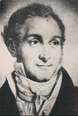
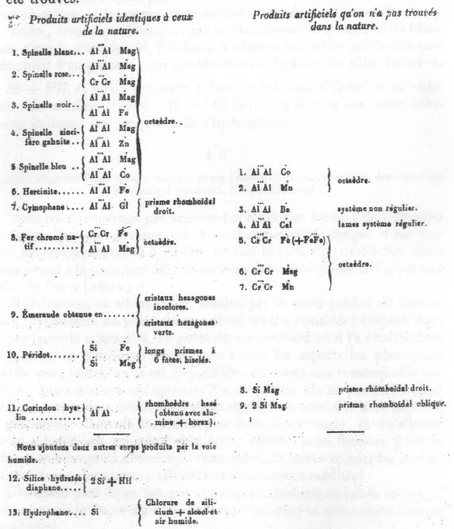

EUGENE CHEVREUL,
CRITIQUE DE JACQUES-JOSEPH EBELMEN
-
biographie d'Ebelmen
revu le 21 octobre 2003
IntroductionL'importance de Jacques-Joseph Ebelmen dans notre vision de l'alchimie, dans l'interprétation que nous en donnons, est absolument unique. C'est lui, le premier, qui est arrivé à établir des synthèses systématisées de la plupart des gemmes naturelles ; lui qui, le premier, a su transformer - nous dirions presque transmuter - des pierres communes en pierres précieuses. Ebelmen s'inscrit donc en droite ligne dans le chemin qui fut tracé, voici bientôt 2000 ans, par les écrits les plus anciens que nous possédons sur l'Art sacré et qui ont été analysés par Marcelin Berthelot dans ses Origines de l'alchimie. Le travail de Berthelot n'est pas resté isolé et Eugène Chevreul, dans son Résumé de l'histoire de la matière depuis les plus anciens philosophes jusqu'à Lavoisier inclusivement, a bien compris, aussi, que si les alchimistes faisaient miroiter de l'or à leurs mécènes mercantis, c'était peut-être pour mieux travailler à la préparation des pierres gemmes. Nous espérons développer une section entière qui traitera, directement dans cette optique, de l'Idée Alchimique et qui sera établie en plusieurs sous-sections comprenant un commentaire du dernier livre de Chevreul sur notre sujet, suivi de notes sur les Origines de l'alchimie de Berthelot, suivi de principes de philosophie alchimique et chimiques, composées des sections prima materia et des 4 sous-sections de la critique de l'histoire de la chimie de F. Hoefer par Chevreul. Cette section se compose de deux articles parus au Journal des Savants, en février 1848 et en novembre 1861 où E. Chevreul commente longuement les travaux de Jacques-Joseph Ebelmen. Ces deux articles se trouvent précédés de la biographie d'Ebelmen qu'on lira ci-après [cette biographie est tirée d'un article du site des Annales des Mines. Cet article a été corrigé des coquilles nombreuses qu'il comportait et a été agrémenté de notes personnelles] :
Jacques Joseph Ebelmen (1814 - 1852)
EBELMEN, ingénieur au Corps des Mines, eut une carrière très courte, mais très brillante. Il mourut, n'ayant pas encore 38 ans, mais ayant déjà conquis une des premières places dans le monde savant et laissant une série de travaux de premier ordre. Peu d'existences ont été aussi bien remplies pour la science.
Il naquit dans le Doubs, à Baume-les-Dames, le 10 juillet 1814. Son père était un simple géomètre, mais doué d'un esprit fin et d'une mémoire merveilleuse, qui se retrouvèrent en lui; il hérita aussi des traditions de travail, de droiture et d'honneur, qui entourèrent son enfance.
Il fit ses classes de grammaire et de lettres au Collège de Baume jusqu'en rhétorique, où il remporta tous les prix; puis, embrassant la voie des sciences, il suivit la classe de mathématiques élémentaires à Paris, au Collège Henri IV, et celle de mathématiques spéciales au Lycée de Besançon. Il n'avait que 17 ans, lorsqu'il entra à l'Ecole Polytechnique, en 1831.
Admis avec le rang de sixième, il en sortit quatrième, pour entrer comme élève-ingénieur à l'Ecole des Mines.
S'il n'avait pas atteint le premier rang à l'Ecole Polytechnique, c'était en partie à cause de sa façon de dessiner, qui resta toujours incorrecte et égaya souvent ses malicieux camarades. Mais il avait, d'autre part, une grande avance sur ses émules au point de vue des connaissances en chimie et en minéralogie; car il avait montré de bonne heure un goût particulier pour les sciences physiques et naturelles. Aussi se trouva-t-il, dès le premier classement, en tête de sa promotion à l'Ecole des Mines, où il avait pour camarades : Sauvage, de Clercq et Bertrand de Boucheporn, qui devinrent tous les trois, à des titres divers, des ingénieurs du plus haut mérite.
Sorti le premier de l'Ecole après de brillants examens, il fut envoyé, en 1836, à Vesoul, pour y remplir les fonctions d'Ingénieur des Mines. Il débuta aussitôt par des recherches analytiques sur différents minerais de la Franche-Comté et il entreprit, dès cette époque, la série des travaux de Chimie métallurgique, qui sont restés un de ses principaux titres de gloire.
Il passa à Vesoul quatre années très remplies par des recherches scientifiques, qui le firent remarquer et rappeler à Paris; il fut, en décembre 1840, adjoint au professeur de docimasie de l'Ecole des Mines, Berthier, qui l'avait connu et apprécié comme élève et qui le tenait en grande affection. Au commencement de 1841, il fut attaché à la commission des Annales des Mines, comme secrétaire-adjoint, et, vers la même époque, nommé répétiteur du cours de Chimie à l'Ecole Polytechnique. En décembre 1845 il devint professeur titulaire de docimasie à l'École des Mines et fut fait chevalier de la Légion d'honneur en avril 1847. Enfin, il fut nommé Ingénieur en Chef des Mines en mars 1852, quelques semaines seulement avant que la mort l'atteignit dans la force de l'âge.
La succession rapide des succès d'Ebelmen était si bien justifiée par ses services exceptionnels et sa réputation croissante, que tous ses camarades y applaudissaient de bon coeur. Ses beaux travaux lui valurent de chauds protecteurs, même en dehors des hommes qu'il avait personnellement connus; c'est ainsi qu'il fut appelé, en 1845, à la manufacture royale de Sèvres.
Alexandre Brongniart, qui avait, depuis plus de quarante ans, dirigé avec beaucoup d'éclat cet établissement à la fois scientifique et artistique, cherchant un savant capable de continuer son oeuvre, choisit Ebelmen, bien qu'il ne le connût encore que par ses travaux. Cette désignation fut ratifiée par le roi Louis-Philippe et le jeune savant fut d'abord adjoint à Brongniart et plus tard, à la mort de celui-ci, en 1847, nommé administrateur titulaire de la manufacture. Les soins dévoués et comme filiaux dont il entoura les dernières années de son protecteur, le zèle qu'il mit à conserver les traditions de Sèvres, tout en ajoutant à sa gloire, furent pour l'illustre vieillard la plus douce des récompenses.
Ebelmen s'attacha à améliorer le sort des ouvriers de la manufacture et celui de leurs familles ; il s'occupa de l'organisation du musée ; enfin, il se voua particulièrement à l'étude des questions qui intéressaient la fabrication de la porcelaine et apporta à cette industrie des perfectionnements fort importants, parmi lesquels il faut noter : la substitution de la houille au bois dans les fourneaux, le développement donné au procédé de coulage, qui permit d'obtenir des pièces de grandes dimensions, d'une légèreté et d'une pureté de forme irréprochables, la rénovation de la fabrication de la porcelaine tendre et de celle des émaux sur métal, qui avaient été délaissées avant lui.
Après la révolution de 1848, il accepta de faire gratuitement, au Conservatoire des Arts et Métiers, un cours public de Céramique, qui eut grand succès et par lequel il fit profiter l'industrie nationale des résultats précieux de ses recherches scientifiques.
Il continuait cependant d'apporter tous ses soins à son enseignement de l'École des Mines et il trouvait encore le temps de traiter des questions nombreuses et diverses devant la Société d'Encouragement pour l'Industrie nationale et pour des commissions officielles.
En 1849, il fut membre du jury central de l'Exposition nationale; en 1851, il représenta l'industrie céramique française à l'Exposition universelle de Londres, comme membre du jury international. A cette occasion, il fut, en Angleterre, l'objet des plus flatteuses marques d'estime de la part des savants les plus considérables, notamment de Michel Faraday, qui, alors dans toute sa gloire, l'invita à assister à côté de lui à la dernière leçon du cours qu'il professait devant l'Institution Royale de Londres et consacra cette leçon tout entière à exposer les travaux du jeune savant français sur la reproduction des minéraux cristallisés et des gemmes.
Quelques mois seulement après son retour en France et la rédaction de son rapport sur l'Exposition, Ebelmen fut atteint d'une fièvre cérébrale et, en quelques heures, enlevé à sa famille, à ses amis, aux admirateurs de cette intelligence si précoce, si originale et, en même temps, si bien pondérée. Il mourut le 31 mars 1852. [il s'agissait donc selon toute vraisemblance d'une méningite cérébro-spinale, c'est-à-dire d'une forme fulminante d'une méningite à méningocoque. Il n'est pas certain que l'on aurait pu sauver Ebelmen même de nos jours]
Chevreul, au nom de l'Académie des Sciences, qui l'avait plusieurs fois chargé de l'examen des travaux du jeune ingénieur, Dufrénoy comme directeur de l'École des Mines, Dumas comme président de la Société d'Encouragement, Bravais, au nom de la Société philomathique, vinrent exprimer sur cette tombe prématurément ouverte l'affliction et la consternation générales.
Chevreul publia plus tard une longue notice sur la vie et l'oeuvre d'Ebelmen ; l'abbé Besson prononça son éloge devant l'Académie des Sciences, Belles-Lettres et Arts de Besançon; Sauvage écrivit une notice excellente sur l'ami, dans l'intimité duquel il n'avait cessé de vivre depuis l'Ecole Polytechnique. Il la terminait ainsi :
Un jugement sain et droit, une grande finesse d'esprit, une intelligence prompte et vive, une étonnante rapidité de conception, une lucidité et une profondeur de vues remarquable, une prodigieuse mémoire distinguaient cette nature privilégiée. Dans chacune de ses recherches, Ebelmen saisissait d'abord le grand côté de la question : il atteignait à une solution neuve, originale, féconde en résultats, sans hésitation et avec une simplicité de moyens, qu'égalait seul l'éclat de la découverte.
Aux dons de l'intelligence et de l'esprit, Ebelmen joignait les plus heureuses qualités du coeur. Il avait cette bonté, cette douceur, cette simplicité, qui sont le propre des âmes élevées, un caractère ferme et modéré, une modestie égale à son talent....
Sa mémoire sera précieusement gardée dans le corps des Ingénieurs des Mines, qu'il a illustré; le temps ne saurait l'effacer dans le souvenir de ceux qui admirent les plus belles facultés de l'intelligence unies aux plus nobles qualités du coeur.
Les travaux d'Ebelmen, bien que se rattachant à des objets variés, ont entre eux un lien commun : c'est l'analyse chimique qui toujours leur a servi de base. Ebelmen maniait l'analyse avec sûreté et toutes ses recherches se sont appuyées sur une connaissance exacte des matériaux qu'il mettait en oeuvre. Mais, en même temps, des connaissances très étendues lui permettaient de tirer de ces premières données des conséquences d'une portée considérable dans les champs d'étude les plus variés.
Quelques-uns de ses mémoires sont essentiellement des travaux de chimie minérale; telles, par exemple, les descriptions et les analyses de la pechblende, du wolfram, du cuivre gris, du kupfernickel, de minerais alcalifères de manganèse ou de minerais de fer arsénifères et chromifères de la Haute-Saône; on lui doit la connaissance de nouveaux composés du titane et de l'uranium; une fois, par hasard, entraîné par l'étude attentive d'un procédé d'analyse, il touche à la chimie organique et il y fait une brillante récolte en découvrant les éthers boriques, siliciques et sulfureux, en même temps que la silice hydratée absolument semblable à l'hydrophane naturelle.
Mais les travaux qui ont le mieux mérité d'attirer l'attention des savants et d'immortaliser son nom sont particulièrement ceux qui se rattachent aux réactions qui se passent dans les foyers métallurgiques, à l'altération lente des minéraux et des roches dans la nature et à la production artificielle des minéraux cristallisés.
Ses premières Recherches métallurgiques datent de 1838; une série de mémoires très remarquables se succédèrent jusqu'en 1844; d'autres parurent seulement en 1851. Pour déterminer la composition des gaz successivement dans les hauts-fourneaux, dans les fours à puddler, dans les fours à réchauffer, il lui fallut inventer des procédés spéciaux, permettant d'aller puiser le mélange gazeux dans les régions les plus chaudes et le plus difficilement accessibles; il appliqua les mêmes procédés à l'étude de la carbonisation du bois dans les meules, à celle de la carbonisation de la houille dans les fours à coke et à l'examen de la combustion dans les foyers des machines locomotives (en collaboration avec Sauvage).
Ces travaux et les déductions très nettes qu'il en tira apportèrent des clartés toutes nouvelles à la science métallurgique, qui marchait encore à tâtons, et permirent d'asseoir sur des bases certaines la théorie de la production de la fonte dans le haut-fourneau et celle de son affinage dans le bas-foyer et dans le four à puddler. Les expériences si complexes de ces différentes opérations sont analysées par le savant ingénieur avec une sagacité véritablement admirable.
Mettant à profit les expériences de Dulong sur les chaleurs de combustion et ses propres recherches, Ebelmen calcule le pouvoir calorifique des mélanges gazeux qui arrivent au gueulard des hauts-fourneaux et explique clairement les avantages que peut donner l'emploi de ces gaz, tenté pour la première fois, en 1810, par un maître de forges français, Aubertot.
Une autre conséquence très inattendue des expériences d'Ebelmen, c'est que des combustibles, qui sont impropres aux usages métallurgiques avec les procédés ordinaires de combustion, tels que des anthracites, des houilles sèches et terreuses, du fraisil de halles, du poussier de charbon, des tourbes, etc., peuvent au contraire développer la chaleur nécessaire au travail du fer, s'ils sont préalablement transformés en combustibles gazeux. Le moyen d'obtenir cette transformation, découvert par Ebelmen, consiste à les soumettre, dans un premier fourneau, appelé générateur, à une combustion partielle à l'aide d'une quantité d'air limitée ; on obtient ainsi un mélange de gaz, oxyde de carbone, hydrogène et hydrocarbures, susceptibles de brûler dans le véritable foyer métallurgique en développant une température extrêmement élevée. C'est donc à Ebelmen que revient l'honneur d'avoir inventé, et ce système nouveau de combustion, et cet appareil de transformation du combustible solide en combustible gazeux, le générateur, qui a reçu de nos jours de très nombreuses et importantes applications.
Grâce à de nouveaux perfectionnements, qui lui permettent, non seulement de fournir un chauffage souvent plus économique et plus intense que les autres fourneaux, mais aussi de donner une atmosphère plus égale, mieux réglée et mieux connue, le générateur est devenu aujourd'hui l'instrument de chauffage le plus apprécié dans les forges, les aciéries, les verreries, etc. Bien que le premier générateur imaginé par Ebelmen ne présentât pas toutes les qualités pratiques, qui donnent aujourd'hui à ce genre d'appareil sa grande supériorité, il n'est que juste de faire remonter au savant Ingénieur des mines la gloire de cette invention si féconde et de voir en lui, comme en son maître, Berthier, un des principaux initiateurs de la Métallurgie moderne.

Pierre Berthier
La publication des Recherches sur la décomposition des minéraux et sur celle des roches silicatèes date de 1845 et 1848; un troisième Mémoire sur les Altérations des roches stratifiées fut le dernier travail présenté par Ebelmen à l'Académie des Sciences (22 décembre 1851). [cf. le Mercure de nature]
Comparant, au moyen d'un très grand nombre d'analyses, la composition des minéraux inaltérés à celle des mêmes espèces minérales, lorsqu'elles ont été profondément altérées par les agents atmosphériques, l'auteur arrive à cette conclusion que les actions réunies de l'eau, de l'air et de l'acide carbonique ont déterminé l'entraînement par dissolution d'une partie de la silice et des bases autres que l'alumine et l'oxyde de fer. La composition du produit final se rapproche de plus en plus de celle d'un silicate hydraté d'alumine, c'est-à-dire d'une argile. Les argiles des terrains stratifiés n'ont pas d'autre origine que le remaniement par les eaux des produits de l'altération des roches silicatées.
Ces conclusions sont de la plus haute importance pour la géologie; car elles donnent la clef de la formation d'un très grand nombre de gîtes minéraux; elles ont, en outre, de fécondes applications pour l'agronomie, puisqu'elles établissent, au moins pour certains terrains, une relation directe entre la nature minéralogique du sous-sol et la composition du sol végétal.
Ebelmen aborda, par la même occasion, un autre problème géogénique fort intéressant. Il remarqua que l'acide carbonique, dégagé en abondance dans les phénomènes volcaniques et sans doute aussi dans la formation plus ou moins ancienne de toutes les roches ignées, se trouve plus tard précipité et fixé par la chaux, résultant de la décomposition des roches ignées elles-mêmes. De même, la décomposition continuelle de sulfates au sein des mers sous l'influence des matières organiques donne naissance à des pyrites de fer, comme celles qu'on trouve disséminées à l'état pulvérulent dans un grand nombre de calcaires bleuâtres; il y a, en même temps, restitution d'oxygène à l'atmosphère. Des phénomènes inverses se passent dans l'altération des roches ; car les pyrites qu'elles contiennent éprouvent une combustion lente et laissent un résidu d'oxyde de fer. Ces deux sortes de phénomènes, inverses les uns des autres, deviennent, par leur balancement, un double régulateur de la composition de notre atmosphère.
Par des considérations de ce genre, étayées sur des observations très exactes, Ebelmen laissait une empreinte ineffaçable dans le domaine de la Géologie et de la Physique du globe.
Cependant une autre série de recherches firent encore une sensation plus profonde sur le monde savant, de 1847 à 1851. Ebelmen parvint à produire, à l'état de cristaux parfaits, des composés identiques par leurs formes, leur densité, leur dureté, leur action sur la lumière polarisée, etc., aux gemmes ou pierres précieuses, que l'on trouve dans la nature et que l'on sait être caractérisées par leur insolubilité et leur résistance aux différents agents d'altération. Il créa une véritable méthode de synthèse des minéraux par la voie sèche.
Imitant ce qui se passe dans la voie humide, lorsque l'évaporation de dissolutions salines laisse des combinaisons cristallisées, Ebelmen imagina de dissoudre à haute température les éléments des corps à former ou au moins à faire cristalliser, en se servant d'une matière susceptible de se liquéfier d'abord, puis de s'évaporer lentement; l'évaporation de la matière dissolvante laisse peu à peu les corps qu'elle contenait prendre une forme régulière. [cf. ce que nous en relatons dans notre Mercure philosophique]
Il se servit de l'acide phosphorique et des phosphates alcalins, puis du borate de soude et surtout de l'acide borique, enfin, plus tard, des carbonates de potasse et de soude. Il profita, pour ses expériences, des fours à porcelaine de Sèvres et, plus tard, des fours à feu continu de Bapterosses, fabricant de boutons en pâte céramique, qui lui permirent d'opérer à de très hautes températures et pendant un temps fort long.
Il obtint ainsi divers minéraux cristallisés de la famille des spinelles, formés par la combinaison d'un sesquioxyde avec un protoxyde, équivalent à équivalent : le spinelle blanc (aluminate de magnésie) ; des spinelles colorés en rouge, en rosé, en bleu, comme les gemmes recherchées pour la joaillerie; des aluminates à base de protoxyde de fer (pléonaste), de zinc (gahnite), de cobalt, de manganèse; des chromites des mêmes bases (tels que le fer chromé) ; des ferrites (tels que celui de zinc ou franklinite) ; l'aluminate de glucine (cymophane), cristallisé dans une tout autre forme que les spinelles ; l'alumine pure (corindon), la glucine pure, qu'il trouva isomorphe avec l'alumine ; le silicate d'alumine et de glucine (émeraude) et différents autres silicates infusibles à la température de nos fourneaux, mais dont plusieurs existent dans la nature. Il produisit aussi des cristaux de borates d'alumine et de magnésie, de titanate de chaux (perowskite), des oxydes de nickel, de cobalt, de manganèse, de fer, de titane, de niobium, de tantale.
La voie qu'il ouvrait ainsi à la Science fut continuée après lui par de savants minéralogistes armés de méthodes nouvelles. Le nombre des minéraux obtenus artificiellement est aujourd'hui considérable et nous pouvons constater avec fierté que les savants français ont pris une part prépondérante dans l'édification de cette branche de la Minéralogie, créée par Ebelmen, aussi bien que dans les hautes conceptions de la Cristallographie fondée par les Romé de Lisle, les Haüy, les Delafosse, les Bravais, les Mallard.
Ebelmen voyait lui-même dans ses premiers succès de synthèse des minéraux « un point de départ pour de nouvelles expériences » et il signalait, dans une de ses dernières communications à l'Académie des Sciences (17 novembre 1851) les conséquences que l'on pouvait tirer de ses recherches au point de vue géologique; car l'action simultanée de la chaleur et des agents chimiques, dont il avait entrepris l'étude dans les fourneaux et les creusets, devait s'être produite sur des proportions remarquables dans les phénomènes de métamorphisme, qui ont eu lieu lors de l'arrivée des masses de roches ignées au contact des terrains préexistants.
Une intelligence aussi claire et aussi bien préparée à de semblables travaux aurait poussé bien loin les déductions de ses belles découvertes, si la mort brutale n'avait tranché de trop bonne heure une existence si pleine de promesses.
ADOLPHE CARNOT, de l'Institut.
Extrait de Annales des Mines, 1852, tome 2, 2eme partie, pages 77 et suiv. :Notice nécrologique sur M. EBELMEN, par M. SAUVAGE, Ingénieur en chef des mines.
Il y a près d'un an qu'une mort prématurée enlevait au corps des mines un de ses jeunes ingénieurs les plus distingués; à la science, un savant éminent ; à ses condisciples et à ses camarades, le meilleur des amis; à une famille désolée, celui qui faisait son bonheur et sa gloire.
Le 31 mars 1852, Jacques-Joseph EBELMEN, ingénieur en chef des mines, chevalier de la Légion d'honneur, administrateur de la manufacture de porcelaine de Sèvres, professeur à l'Ecole des mines et au Conservatoire des arts et métiers, membre de la Société d'encouragement, mourait à Sèvres d'une maladie qui, en quelques heures et en dépit des soins les plus dévoués, détruisit une jeune et vigoureuse organisation. Et, comme s'il eût été l'âme de sa famille, en même temps qu'il en était l'amour et l'orgueil, à peine la tombe s'était-elle fermée sur lui qu'elle s'ouvrit et pour son vieux père, qu'avait distingué l'étude des sciences mathématiques, et pour son jeune frère, déjà honoré des hautes fonctions de la magistrature.
Ebelmen naquit à Beaume-les-Dames (Doubs) le 10 juillet 1814, commença ses humanités en 1822, et, après une suite non interrompue de succès, termina sa rhétorique à la fin de 1828, à peine âgé de quatorze ans. Il fit ses études de mathématiques élémentaires au collège Henri IV et celles de mathématiques spéciales au collège de Besançon. Admis à l'École polytechnique en 1831, il se trouva l'un des plus jeunes élèves de sa promotion, et s'y fit remarquer par cette facilité de conception et cette solidité de jugement dont il donna tant de preuves par la suite. Il sortit de l'École l'un des premiers et prit rang, en 1833, dans le corps des mines. A la suite de brillants examens, il quitta en 1836 l'École des mines, premier de sa promotion , et fut envoyé à Vesoul pour y remplir les fonctions d'ingénieur ordinaire. Il reçut le grade d'aspirant ingénieur le 2 juillet 1837, et celui d'ingénieur ordinaire de deuxième classe le 30 janvier 1839.
Ses remarquables travaux et ses études chimiques au laboratoire de Vesoul furent bientôt distingués et le firent nommer, le 18 décembre 1810, adjoint au professeur de docimasie de l'École des mines, M. Berthier. Cet excellent maître avait depuis longtemps apprécié Ebelmen, et lui portait la plus grande affection. Au commencement de 1841, Ebelmen fut attaché à la commission des Annales des mines comme secrétaire adjoint, et, vers la même époque, nommé répétiteur du cours de chimie à l'École polytechnique.
A la demande de M. Brongniart, bon juge du savoir et du talent, une décision du roi Louis-Philippe, du 5 avril 1845, appela Ebelmen à la manufacture de Sèvres avec le titre d'administrateur adjoint. Un arrêté ministériel du 16 décembre 1845 le nomma professeur titulaire de docimasie à l'École des mines. Il fut fait chevalier de la Légion d'honneur par ordonnance royale du 26 avril 1846, et élevé le 25 juin 1847 à la première classe de son grade d'ingénieur ordinaire. Quelques mois plus tard, le 14 octobre 1847, à la mort du savant illustre qui l'avait désigné pour son collaborateur à la manufacture de Sèvres, Ebelmen devint, par décision royale, administrateur de cet établissement à la fois scientifique et artistique. Un décret du 8 mars 1852 lui conféra le grade d'ingénieur en chef des mines.
Les commencements de la carrière d'Ebelmen furent marqués par des succès ; sa facilité à apprendre, sa mémoire extraordinaire le placèrent continuellement au premier rang. Plus jeune de trois ou quatre ans que tous ses condisciples , il fut constamment à leur tête. Son goût prononcé pour les sciences naturelles se manifesta dès son jeune âge ; déjà , avant d'entrer à l'École polytechnique, il avait, en minéralogie et en chimie, des connaissances étendues que les meilleurs élèves possèdent rarement d'aussi bonne heure. A peine installé dans sa résidence de Vesoul , il suivit avec ardeur sa vocation , et préluda par de remarquables travaux docimastiques et chimiques aux brillantes recherches qui plus tard l'ont conduit au premier rang dans la science. Ses premiers travaux portent ce cachet de netteté et d'originalité qui caractérise toutes ses belles découvertes dans le domaine de la minéralogie et de la métallurgie, et en lisant les premières notices, les premiers mémoires d'Ebelmen, il était facile de préjuger l'avenir scientifique qui lui était réservé et qui lui avait été prédit dès l'École polytechnique.
Pendant la période de 1837 à 1841, étant ingénieur de l'arrondissement de Vesoul, il publia successivement dans les Annales des mines un grand nombre d'analyses et de mémoires dont voici l'énumération :
- Un Nouveau Procédé pour analyser les minerais de manganèse ;
- Un Moyen de reconnaître la présence au sélénium dans le soufre ;
- Une Note sur une nouvelle espèce de sous-sulfate de fer trouvé dans les mines de Ronchamps (Haute-Saône) ;
- L'Analyse d'un péridot produit dans le haut-fourneau de Sèvres ;
- Une Notice sur des expériences relatives à l'emploi du bois nature dans les hauts - fourneaux. C'est là le premier travail par lequel Ebelmen entre résolument dans l'étude qu'il a laissée si loin de la chimie métallurgique. Il résout , par des expériences précises et de la plus grande clarté , la question, fort controversée à cette époque, des modifications qu'éprouvait, en descendant dans le fourneau , le bois en nature dont on se servait en remplacement d'une partie du charbon. Ses expériences ont appris que les matières volatiles que dégage le bois en se carbonisant ne pouvaient être utilisées dans les hauts-fourneaux, ni pour produire de la chaleur, ni pour opérer la réduction du minerai; elles ont permis d'expliquer les modifications observées dans l'allure des hauts-fourneaux lors de l'emploi du bois en nature.
- La Description d'un nouveau procédé d'analyse chimique. Ce procédé, aussi simple qu'élégant, permet d'évaluer exactement la quantité d'oxygène absorbée par un corps pendant que s'opère sa dissolution dans un acide. Il peut être appliqué dans un grand nombre de cas, et sert à résoudre des combinaisons qui jusqu'alors restaient obscures et incertaines; Ebelmen en a fait usage dans plusieurs recherches analytiques.
- Un Examen des produits de l'altération spontanée du houilles pyriteuses de la mine de Corcelle ;
- L'Analyse de l'hématite rouge arsénifère, de Bucey-les-Gy ;
- L'Analyse élémentaire de quelques bitumes minéraux ;
- Une Note sur la présence du chrome dans les minerais de fer de la Haute-Saône. Ebelmen découvrit que presque tous les minerais en grains de la Haute-Saône renferment du chrome, quelques-uns même en proportion appréciable à l'analyse. Il en découvrit également dans les minerais oolithiques du terrain néocomien du Jura. Il remarqua que les minerais hydroxydés qui se rencontrent à la base de l'oolithe inférieure n'en renferment aucune trace.
- Un premier Travail sur la composition des gaz des hauts-fourneaux , et sur le parti qu'on peut en tirer comme combustible. Dans ces recherches, Ebelmen se contenta de faire l'analyse des gaz pris au gueulard des hauts-fourneaux dans différentes circonstances de roulement.
- Un Essai sur la réduction des minerais de fer dans les hauts-fourneaux. Les différents minerais qu'il retira du fourneau à diverses hauteurs étaient analysés, et il appréciait ainsi les progrès qui s'effectuent dans leur réduction à mesure qu'ils descendent vers le creuset.
- Une Note sur le parti qu'on peut tirer dans les arts des résidus de la préparation du chlore.
- L'analyse des divers minerais en grains de la Haute-Saône. La composition des mines grises est comparée à celle des mines rouges , et l'auteur, s'appuyant sur d'ingénieuses considérations géologiques, a tiré de cette étude quelques conséquences relatives aux causes qui peuvent avoir modifié, dans le sol même, la composition de ces minerais.
- L'Analyse des eaux d'un puits creusé dans les schistes du lias supérieur à Vesoul; celle du calcaire magnésien de Bucey-les-Gy, qui s'est trouvé être une dolomie bien caractérisée.
- Des Recherches sur la présence de l'arsenic dans les minerais de fer de la Haute-Saône, d'où il conclut que tous ces minerais en renferment des quantités appréciables.
- La Description d'un oxyde de manganèse natif alcalifère à Gy (Haute-Saône). Cette espèce, dont on doit la découverte à Ebelmen, remplit des cavités irrégulières dans les calcaires du deuxième étage jurassique. Son aspect fibreux, son peu de dureté, sa composition chimique caractérisée par la présence d'environ 4 % de potasse, la distingue nettement des autres minerais de manganèse connus.
- Un Mémoire sur la chaleur de combustion du carbone et de l'oxyde de carbone. Ebelmen a donné dans cet intéressant travail une nouvelle preuve de la netteté et de la puissance de son esprit. Il a déduit, des recherches de Dulong sur les chaleurs de combustion, ce résultat qui présente un grand intérêt théorique et une grande importance par ses applications à la théorie des fourneaux, savoir : l'abaissement considérable de température et l'absorption de chaleur latente qui ont lieu dans la transformation de l'acide carbonique en oxyde de carbone. Les phénomènes de la combustion du charbon de bois, si différents de ceux du coke dans les foyers métallurgiques, furent expliqués par ce principe.
Cette série de belles recherches accomplies en province en quatre années, et dans les rares moments de loisir dérobés à ses devoirs administratifs, devaient conduire Ebelmen sur un plus vaste théâtre. C'est à Paris, au milieu des savants qui l'aimaient, avec les ressources des laboratoires de l'École des mines, de l'École polytechnique et de la manufacture de Sèvres, qu'Ebelmen conçut et exécuta depuis les grands travaux qui l'ont illustré.
Continuant ses expériences métallurgiques, Ebelmen fit alors de ses Recherches sur la composition et l'emploi des gaz des hauts-fourneaux, l'objet d'un deuxième mémoire (1841, Annales des mines). Ce mémoire comprend les résultats de deux séries d'expériences faites sur les hauts-fourneaux de Clairval et d'Audincourt (Doubs). Les gaz qui circulent dans le haut-fourneau de la tuyère au gueulard, pris en divers points de la hauteur de l'appareil, furent analysés. Ebelmen put ainsi déterminer, à l'aide de plus de quarante analyses, les changements successifs de la composition de la colonne gazeuse, et en déduire une théorie complète des phénomènes qui se passent dans le haut-fourneau, ainsi que l'évaluation de la valeur calorifique des gaz en plusieurs régions de la hauteur.
La première idée de l'établissement de constructions propres à être chauffées par la flamme perdue des hauts-fourneaux est due à un maître de forges français, M. Aubertot. Cette découverte, signalée par M. Berthier, était restée longtemps à peu près sans application ; Ebelmen a jeté la plus vive lumière sur la composition et la puissance calorifique des gaz extraits des hauts-fourneaux ; il les a étudiés avec sa sagacité ordinaire à l'aide d'appareils simples et ingénieux, et il est arrivé ainsi à la théorie la plus complète du haut-fourneau et à celle de l'emploi de ces gaz comme combustible. Il a tiré ces conclusions pratiques qui intéressent à un si haut degré la métallurgie, savoir : qu'il serait avantageux, dans beaucoup de cas, de brûler des combustibles à l'état gazeux plutôt qu'à l'état solide, et qu'il serait possible de développer la chaleur nécessaire au travail du fer en employant des anthracites, des houilles sèches et terreuses de mauvaise qualité, du fraisil des halles, du poussier de charbon, des tourbes, etc., qui ne peuvent l'être, du moins avantageusement, dans les procédés ordinaires de combustion. Ce grand travail a été l'objet d'un rapport à l'Académie des sciences, où il a reçu le plus bienveillant accueil. Le savant rapporteur, M. Chevreul, justifiait la longueur de son rapport par l'importance du sujet, les difficultés qu'il présentait, l'habileté avec laquelle elles avaient été surmontées et la précision des résultats obtenus.
« Grâce à ces recherches, disait-il, nous avons maintenant une idée juste de ce qu'est un haut-fourneau, nous savons que la température élevée de la moitié inférieure de l'ouvrage n'est développée qu'à la condition d'un grand abaissement de température, résultant de la transformation de l'acide carbonique, premier produit de la combustion, en oxyde de carbone, et mous savons de plus que, par une sorte de compensation, cet oxyde est capable de réduire, dans la cuve, les 4/5 du mimerai; enfin nous savons qu'il y a moins que le tiers de la chaleur développée qui soit employée utilement, et dès lors nous sommes en mesure d'apprécier toutes les conséquences utiles de l'heureuse idée qu'a eue M. Aubertot de tirer parti de la flamme perdue de ses hauts-fourneaux. Des travaux comme ceux de M. Ebelmen, continue le rapporteur, ne peuvent être trop encouragés, non-seulement par l'administration qui y préside, mais encore par l'Académie ; car l'application des éléments théoriques aux grandes opérations des arts offre un excellent moyen de contrôler ces éléments, en même temps qu'elle peut conduire à des découvertes purement scientifiques, par l'occasion qu'elle fournit souvent d'apercevoir des phénomènes qui ne peuvent être prévus dans le cabinet ni se manifester à l'observation dans un laboratoire. »
L'Académie donna une éclatante approbation aux travaux d'Ebelmen et l'engagea à continuer ses recherches.
La réputation d'Ebelmen comme savant métallurgiste avait pris naissance lors de la publication de son premier mémoire sur les gaz et sur le parti qu'on peut en tirer comme combustible; elle reçut un vif éclat de ce second travail et des recherches qui le suivirent sur le même sujet. Excité en effet par les encouragements de l'Académie, Ebelmen publia successivement, en 1843 et 1844, des Recherches sur la composition des gaz des foyers d'affinerie, Sur la production et remploi des jas combustibles dans les arts métallurgiques, Sur la carbonisation du bois, Sur la composition des gaz des foyers métallurgiques, Sur une expérience relative à la carbonisation du bois en meule, Sur les générateurs à gaz des usines d'Audincourt. Il fit connaître en 1851 de Nouvelles études sur la composition des gaz des hauts-fourneaux et sur la théorie de ces appareils, et publia quelque temps après ses Recherches sur la composition des gaz qui se dégagent des fours à coke. Ces divers travaux furent l'objet de deux nouveaux rapports à l'Académie des sciences et, par suite, des éloges les plus flatteurs de ce corps savant. Le premier de ces rapports, à la date du 1er juillet 1844 (t. XIX des Comptes rendus), comprend l'examen des travaux de 1843 à 1844 ;le second (t. XXII des Comptes rendus) est relatif aux nouvelles recherches de 1851.
Dans ses recherches sur les feux d'affinerie, Ebelmen a entrepris d'expliquer toutes les circonstances de transformation de la fonte en fer et d'obtenir enfin la théorie de cette opération, simple en apparence, extrêmement compliquée en réalité. Ses efforts ont été couronnés de succès, et il est remarquable de voir avec quelle sagacité l'auteur a analysé des phénomènes si complexes. Il démontre que dans la première période de l'affinage, la fonte perd du carbone et du silicium par réaction sur l'oxygène de l'oxyde de fer qui y est mêlé ou ajouté. Il se produit alors de l'oxyde de carbone et de la silice, et du fer se trouve réduit. La chaleur développée par la combustion du carbone et du silicium est loin de compenser celle qui est nécessaire à la séparation de l'oxygène du fer ; il doit donc alors y avoir refroidissement. Dans la deuxième période, la combustion du carbone, du silicium et d'une petite quantité de fer devant les tuyères occasionne un grand développement de chaleur; mais comme la réaction continue encore dans la masse entre le reste du carbone combiné et l'oxyde de fer, une portion de la chaleur développée par cette combustion devient latente. Enfin, dans la première période, les gaz dégagés contenant un excès de matières combustibles et pas d'oxygène libre sont d'un emploi plus avantageux pour chauffer les fours annexés aux foyers comtois que ne le sont les gaz produits dans la deuxième période, ceux-ci renfermant de l'oxygène avec une moindre proportion d'éléments combustibles.
Dans ses recherches sur la composition du gaz des foyers métallurgiques, Ebelmen, étudiant les hauts-fourneaux au coke, justifie les conclusions théoriques de ses premiers travaux sur les fourneaux au charbon de bois, tout en montrant les causes de l'influence de la nature différente du combustible sur les circonstances du roulement. Il y a bien plus de chaleur développée dans un fourneau au coke que dans un haut-fourneau au charbon de bois, et la théorie est ici parfaitement d'accord avec la pratique, puisque l'on sait que, dans ces appareils, deux parties de coke équivalent à une partie seulement de charbon de bois. Ebelmen fait voir que ce résultat tient à ce que le charbon de bois se prête bien plus facilement que le coke, soit à produire de l'acide carbonique en s'unissant directement avec l'oxygène, soit à produire l'oxyde de carbone en s'unissant avec l'acide carbonique déjà formé. Cette différence de disposition explique encore pourquoi la région du haut-fourneau, comprise entre la tuyère et la limite où la colonne ascendante ne contient plus d'acide carbonique, est plus étendue quand on brûle du coke que lorsqu'on emploie du charbon de bois ; et si l'on considère que la réduction du minerai est achevée à une plus grande distance de la tuyère, on comprendra que la fonte obtenue avec le coke, une fois arrivée dans la région de la tuyère, sera bien plus exposée à s'affiner et même à s'oxyder par la double action de l'oxygène atmosphérique et de l'acide carbonique, que ne l'est la fonte obtenue avec le charbon de bois, à moins qu'on ne corrige cette tendance en employant, pour la fusion d'un même poids de minerai, plus de coke que de charbon de bois. Poursuivant ces conclusions si simples, Ebelmen explique un grand nombre de faits concernant ce qu'on appelle l'allure des hauts - fourneaux. Il montre qu'il y a plus de motifs encore pour employer les gaz des fourneaux à coke qu'il n'y en a pour utiliser ceux des fourneaux au charbon de bois. L'analyse des gaz des cubilots marchant au coke explique non moins simplement pourquoi, contrairement à ce qui se passa dans les hauts-fourneaux, le coke est dans les cubilots trois à quatre fois plus avantageux que le charbon, résultat qui semblait contradictoire sans la théorie d'Ebelmen.
Des analyses des gaz des cheminées de fours à puddler et à réchauffer et la description de nouvelles expériences sur la transformation complète des combustibles minéraux en gaz, dans les générateurs, terminent ses recherches sur les combustibles. Des conclusions dignes d'intérêt viennent pour ainsi dire au-devant du savant, et chaque pas qu'il fait porte la lumière dans les questions les plus obscures.
Les études sur la carbonisation des bois en meule complètent ce bel ensemble de recherches. Ebelmen trouve que le bois se partage en deux parties, que l'une est consumée pour fournir la chaleur nécessaire à la distillation de l'autre, et que la combustion de la première portion résulte uniquement de l'union du carbone avec l'oxygène atmosphérique, cet oxygène se portant sur le charbon solide plutôt que sur les gaz combustibles auxquels la distillation du bois donne lieu, par la raison que ces gaz sont mélangés de vapeur d'eau et d'azote, que leurs chaleurs spécifiques sont très-grandes, et que leur température est inférieure à celle qui leur permettrait de prendre feu. Ebelmen conclut de ces recherches que la seule économie à apporter dans la carbonisation en meule consisterait à opérer le développement de la chaleur par des charbons ou des débris de bois de peu de valeur. Il lui paraît enfin difficile d'appliquer avec succès ce mode de carbonisation en meule à la production du charbon roux; et il est bon de rappeler qu'à l'époque où cette opinion fut émise, la production du charbon roux en forêt avait de nombreux partisans.
Les recherches faites en 1851 sur la théories des fourneaux confirment nettement les conclusions des premiers mémoires. Il substitua dans ses analyses la méthode eudiométrique à l'oxyde de cuivre; les résultats furent identiques.
Le travail sur la composition des gaz des fours à coke complète l'histoire chimique de la carbonisation. Les conclusions, selon l'habitude d'Ebelmen, sont d'une grande précision : plus des deux tiers de l'hydrogène de la houille sont brûlés pendant la carbonisation; les produits gazeux des fours à coke renferment une grande quantité de chaleur utilisable ; mais il faut les brûler très-près des fours, parce qu'ils sont pauvres en principes combustibles et ne peuvent par conséquent être enflammés par un excès d'air que lorsqu'ils se trouvent encore à une très-haute température; on doit pouvoir arriver, sans trop de difficulté, à produire dans ces fours à peu près autant de coke que la houille en donne en vases clos, dernière conclusion digne de toute l'attention des exploitants et qui intéresse au plus haut degré une foule d'industries.
Telle est la série des travaux métallurgiques d'Ebelmen poursuivis pendant plusieurs années avec autant de persévérance que de talent. Ils seront toujours cités, selon les paroles de l'académicien rapporteur, comme un des premiers exemples où la science du physicien et du chimiste a concouru avec le savoir de l'ingénieur à éclairer et à approfondir un des sujets les plus importants de la métallurgie. Nous devons regretter que le temps n'ait pas été donné à Ebelmen de soumettre à une révision générale l'ensemble des travaux qu'il a successivement publiés, et de les coordonner dans un ouvrage spécial de manière à donner du développement à quelques explications théoriques ; c'eût été sans contredit l'un des plus beaux monuments de la science métallurgique.
Ebelmen avait enfin entrepris, avec notre collaboration , une série d'expériences ayant pour objet l'analyse des produits gazeux de la combustion dans les foyers des machines locomotives. Les résultats obtenus dans un nombre considérable d'analyses font entrevoir la possibilité d'établir une théorie définitive de ces foyers intéressants qui, jusqu'à ce jour, ont été construits d'après des idées souvent contradictoires. On peut déjà affirmer qu'ils sont bien plus parfaits qu'on n'est généralement porté à le croire, et que la combustion y est beaucoup plus complète que dans les foyers des machines fixes à vapeur.
L'expérimentation a été faite sur les trois types de machines locomotives du chemin de Lyon : machines à voyageurs à roues libres, machines mixtes à quatre roues accouplées, machines à marchandises à six roues accouplées.
La composition et la nature des gaz. varie nécessairement avec la quantité d'air qui traverse le combustible, et cette quantité dépend, comme on le sait, de la tension de la vapeur au sortir de l'orifice d'échappement. La proportion de l'acide carbonique que contiennent les gaz est, en général, plus grande que dans les foyers ordinaires des machines fixes, tandis que la proportion d'oxygène libre correspondant à l'excès d'air appelé y est moindre; résultat qui est évidemment en rapport avec un accroissement de l'effet utile du combustible. Dans les expériences sur les machines à voyageurs et sur les machines mixtes la proportion de l'acide carbonique s'est élevée en effet de 12,42 à 18,49 % du volume des gaz sans qu'il y ait eu aucune production d'oxyde de carbone : et ce résultat se rapproche d'une manière très-remarquable du nombre 20,80 qui représente la proportion d'acide carbonique dans une combustion théorique où tout l'oxygène de l'air serait transformé en acide carbonique.
La combustion se fait avec d'excellentes conditions dans les machines à voyageurs et dans les machines mixtes, pourvu que le feu y soit conduit selon certains principes, certaines règles bien définies aujourd'hui et que les meilleurs mécaniciens pratiquent. Ces foyers ne produisent presque point d'oxyde de carbone ; il est rare en effet que la proportion de ce gaz ait dépassé 2 %.
Les machines à marchandises dont le foyer plus profond est souvent chargé d'une grande épaisseur de coke, produisent une plus forte quantité d'oxyde de carbone ; la quantité s'est élevée souvent jusqu'à 7,58 % avec une charge de coke de 1,09 m. La composition des gaz varie d'ailleurs dans les différentes rangées de tubes. Il ne sera certainement pas impossible de trouver telle disposition qui permette de brûler utilement cet oxyde de carbone et d'améliorer ainsi la combustion dans ces machines.
Pendant le stationnement des locomotives ou après la fermeture du régulateur, les gaz présentent une proportion plus forte encore d'oxyde de carbone; elle peut aller jusqu'à 12 % de leur volume. Ces résultats sont parfaitement d'accord avec les différences de consommation qu'on observe dans la pratique de la conduite de ces diverses machines. Ils indiquent une limite de hauteur de coke sur la grille qu'il est nuisible de dépasser, et toute l'économie qu'on peut attendre de l'emploi intelligent de la détente et de l'échappement variable pour régler convenablement le tirage d'après la hauteur du combustible.
Tout en poursuivant sans relâche les expériences que nous tenons d'analyser et les admirables recherches sur la formation des cristaux dont nous allons bientôt parler, Ebelmen s'occupait de travaux nombreux et variés qui ont été pour la plupart insérés dans les Annales de physique et de chimie et dans les Comptes rendus de l'Académie. Ainsi il étudia quelques composés de l'urane (1842) ; il fit l'Exposé d'une méthode four extraire l'urane de la pechblende, - la Description du peroxyde d'urane anhydre et de deux hydrates de cet oxyde qui n'avaient pas encore été obtenus à l'état de pureté, - la préparation, l'examen cristallographique et l'analyse de plusieurs sels simples et doubles d'urane ; - des Expériences sur la détermination du poids atomique de ce métal ; - enfin l'exposé d'une Méthode analytique pour reconnaître qualitativement et doser exactement l'urane dans quelques cas où les méthodes connues jusqu'alors étaient insuffisantes. Il rédigea (1843) une Note sur la constitution chimique de la pechblende dans le but de fixer la composition de l'oxyde d'urane; - une Note sur le dosage du manganèse, - une autre Note sur la composition du wolfram. Il fit voir que, contrairement à une opinion reçue, ce minéral renferme de l'acide tungstique et non de l'oxyde de tungstène. Il y reconnut en outre de la magnésie et de la chaux qui n'y avaient pas encore été signalées. Il inséra encore dans les Annales de chimie un mémoire sur un nouveau chlorure de titane et sur quelques autres combinaisons de ce métal ; - une Note sur un nouveau mode d'emploi de l'hydrogène sulfuré dans l'analyse chimique ; - un Mémoire sur un nouveau procédé de séparation des alcalis et de la magnésie et d'analyse de minéraux alcalifères (1847); et dans les Annales des mines, une Description du cuivre gris de Mouzaïa, ainsi qu'une Analyse du kupfernickel d'Ayer (Haut-Valais).
A peine nommé répétiteur à l'École polytechnique, nous disait M. Dumas en prononçant de touchantes paroles sur la tombe d'Ebelmen, il cédait au charme qui attire tous les jeunes chimistes vers l'étude de la chimie organique. Il n'y a fait qu'une apparition, mais si brillante et si féconde que, tant que la chimie organique sera cultivée, les éthers silicique et borique, leurs propriétés extraordinaires, la découverte de l'hydrophane artificielle qui en dérive, demeureront liés au nom d'Ebelmen leur inventeur. C'est alors, en effet, qu'il entreprit ses recherches sur les combinaisons des acides borique et silicique avec les éthers, et qu'il décrivit des combinaisons qui ont fourni le premier exemple d'un acide produisant plusieurs éthers composés, lesquels présentent tous le même caractère de neutralité. Soumettant l'un des éthers siliciques liquides à l'action prolongée d'une atmosphère humide, il obtint de la silice hydratée en masses diaphanes qui deviennent, avec le temps, assez dures pour rayer le verre. Ce produit présente de l'analogie avec la variété de quartz nommée hyalite. Il obtint par le même procédé, à l'aide de l'éther silicique encore acide ou de l'alcool mêlé de chlorure de silicium, une matière en tout semblable à l'hydrophane naturelle. Avec la collaboration d'un jeune chimiste , M. Bouquet, il publia un mémoire sur de nouvelles combinaisons de l'acide borique avec les éthers et sur l'éther sulfureux, où il fait connaître un nouvel hydrate d'acide borique correspondant au borax fondu et l'éther sulfureux qui n'avait pas encore été obtenu.
Jusqu'à présent nous avons vu Ebelmen résolvant les plus hauts problèmes de la métallurgie, traitant avec succès de grandes questions de chimie organique, produisant artificiellement par voie humide des minéraux siliceux; nous allons le suivre sur un nouveau terrain ; nous le verrons s'élever de l'analyse de quelques terres et de quelques roches aux considérations les plus neuves sur les grandes causes qui peuvent troubler la composition de l'air atmosphérique et appliquer d'une manière brillante et toujours avec la même simplicité la science chimique à l'histoire géologique du globe : nous voulons parler des mémoires qui ont pour titre :
- Recherches sur les produits de la décomposition des espèces minérales de la famille des silicates (1845) ;
- Recherches sur la décomposition des roches (2e mémoire, 1848);
Et enfin, Recherches sur les altérations des roches stratifiées sous l'influence des agents atmosphériques et des eaux d'infiltration (22 décembre 1851 ). C'est le dernier travail qu'il fut donné à Ebelmen de présenter à l'Académie.
Ces recherches sur la décomposition des roches ont une très-toute portée géologique. L'analyse d'un très-grand nombre de roches l'a conduit aux conclusions suivantes : Dans la décomposition des silicates ne contenant pas d'alumine, on trouve constamment que la silice, la chaux et la magnésie sont éliminées; mais tantôt le fer reste dans le résidu de la décomposition à l'état de peroxyde, tantôt il disparaît avec les autres bases : dans ce dernier cas la décomposition du silicate ne laisse aucun résidu. - Dans la décomposition des silicates contenant de l'alumine et des alcalis avec ou sans les autres bases, l'alumine se concentre dans le résidu en retenant une portion de la silice et en fixant de l'eau, tandis que les autres bases sont entraînées avec le reste de la silice. Le produit final se rapproche de plus en plus d'un silicate d'alumine hydraté, d'une argile. Ces deux principes nettement posés sont d'une fécondité remarquable pour l'explication d'un grand nombre de faits dans la constitution des terrains du globe. Presque toutes les roches d'origine ignée renferment de l'alumine et donnent, par conséquent, un résidu argileux quand ils se décomposent sous l'influence de l'atmosphère. Ebelmen nous montre que l'on ne saurait attribuer à l'argile des terrains stratifiés une autre origine que l'entraînement mécanique des résidus provenant de l'altération et de la décomposition des roches ignées. Bientôt il pousse jusqu'aux dernières limites les résultats de son travail analytique, et les jugeant avec sa profondeur habituelle, il aborde et résout une question des plus importantes pour l'histoire naturelle du globe, à savoir : la rapports qui existent nécessairement entre les phénomènes de l'altération des roches et la composition de l'air atmosphérique. Les diverses bases qui se séparent de la silice par la décomposition des roches ignées déterminent en effet, en se peroxydant et en se carbonatant, la précipitation, la minéralisation de l'oxygène et de l'acide carbonique. Ce dernier élément surtout est absorbé en grande quantité, et un calcul bien simple montre qu'une faible épaisseur de roche plutonique décomposée suffirait pour la précipitation et l'absorption complète de l'acide carbonique contenu dans l'atmosphère. Or les couches argileuses des terrains stratifiés accusent la décomposition de masses immenses de roches plutoniques et, par conséquent, la précipitation de quantités d'acide carbonique hors de toute proportion avec celles qui existent actuellement dans l'air. Ce résultat s'explique sans qu'il soit nécessaire d'admettre que l'air ait eu, aux diverses époques géologiques , une composition très-différente de celle qu'il présente aujourd'hui. Ebelmen voit, en effet, dans les phénomènes volcaniques, la principale cause qui restitue à l'atmosphère l'acide carbonique que la décomposition des roches en précipite continuellement; il insiste sur ce fait intéressant, que la formation des roches ignées est accompagnée du dégagement d'un gaz que précipitera et que fixera ensuite la destruction des mêmes roches. Tous les faits qu'Ebelmen a consignés dam ses mémoires font, comme il le dit lui-même dans son style clair et concis, ressortir la liaison intime que tous les grands phénomènes de la nature ont les uns avec les autres.
« La chaleur centrale, ajoute-t-il, cause première de toutes les actions volcaniques, paraît indispensable à l'entretien de la vie organique à la surface. Supprimez les phénomènes volcaniques et bientôt l'acide carbonique de l'air aura disparu. Cette vie intérieure du globe terrestre, rendue manifeste par les mouvements de sa croûte solide, par les déchirements du sol, par ces violentes éruptions de gaz et de matières en fusion, serait une des conditions essentielles du maintien de la vie à sa surface. Quand Saussure eut démontré, par ses belles expériences, cette loi de la nature en vertu de laquelle le carbone passe de l'atmosphère dans les végétaux pour être bientôt restitué à l'état d'acide carbonique, soit par leur décomposition, soit par les animaux qui s'en nourrissent, on crut que cette rotation du carbone assurait la permanence de la composition de l'air atmosphérique. On voit maintenant qu'il faut faire intervenir dans la question des phénomènes d'un tout autre ordre et que les éléments minéraux de la croûte terrestre concourent aussi, par des réactions inverses les unes des autres, à la production de cet équilibre.»
Dans son troisième mémoire, Ebelmen commence par faire voir que les calcaires bleuâtres si communs dans toutes les formations secondaires doivent, en grande partie, leur coloration à de la pyrite de fer pulvérulente disséminée dans toute leur masse et que ces calcaires se décolorent par la combustion lente de cette pyrite avec formation d'oxyde de fer, partout où ils se trouvent en contact avec l'atmosphère ou avec des eaux aérées. Se fondant alors sur la transformation bien connue des sulfates en sulfures par les matières organiques en décomposition spontanée, Ebelmen revient avec plus d'autorité sur une idée déjà développée par lui dans ses précédents mémoires. Cette formation permanente de pyrites par la décomposition continuelle de sulfates au sein des mers où se déposent les roches stratifiées lui est maintenant démontrée; elle doit être alors une cause puissante de restitution d'oxygène à l'atmosphère sous forme d'acide carbonique, tandis que l'altération des mêmes pyrites dans les roches stratifiées des continents est une cause non moins énergique de soustraction de l'oxygène et de la fixation dans les sulfates, ces deux réactions contraires devenant ainsi par leur balancement un double régulateur de la composition de notre atmosphère.
Comme l'a donc si bien dit M. Dumas, la chimie annonçait que la proportion des éléments de l'air se maintient invariable ; notre orgueil trouvait la raison de cet équilibre dans l'action des plantes qui lui rendent l'oxygène que l'homme et les animaux lui ont enlevé. Eh bien ! ce balancement imaginaire n'est plus qu'un phénomène de détail passant inaperçu à côté des sources d'altérations purement géologiques qu'Ebelmen a découvertes et dont il a calculé les effets. C'est par masses immenses que les roches qui se désagrègent sans cesse pour former les terrains de transport enlèvent, par leur fer, son oxygène à l'air, qu'elles en soutirent l'acide carbonique par leur chaux. La terre y rejette, au contraire, des masses non moins grandes d'acide carbonique par ses volcans; elle lui en rend des quantités non moins considérables par une foule de combustions lentes qui se passent à sa surface. L'air est donc un élément géologique changeant sans cesse et déterminant sans cesse les changements que la surface du globe subit. Ebelmen a laissé ainsi une trace profonde dans l'histoire de l'air et dans celle de la physique du globe. [il est assez remarquable de voir ainsi unifiés des éléments que la mythologie n'a jamais cessé de voir comme fondamentaux : AIR - TERRE - EAU et FEU. Cf. Cristallogénie et Idée alchimique, V]
Tous ces brillants travaux eussent suffi sans contredit à la gloire d'Ebelmen ; mais il lui était donné d'aller plus loin encore et de faire une de ces découvertes qui perpétuent un bon dans la postérité. Le monde savant s'étonna tout à coup à la lecture faite le 8 novembre 1847, à l'Académie des sciences, d'un mémoire (Voir les Annales de physique et de,chimie, 3e série, t. XXII (1848)) sur une nouvelle méthode pour obtenir des combinaisons cristallisées par la voie sèche et sur ses applications à la reproduction des espèces minérales. [cf. notre Mercure philosophique] C'est qu'en effet Ebelmen venait de faire une découverte du premier ordre en imaginant une méthode propre à obtenir par la voie sèche, à l'état de cristaux parfaits, des composés semblables à ces corps naturels que nous connaissons sous le nom de pierres siliceuses, de pierres gemmes et de pierres précieuses, corps remarquables comme on sait, par leur insolubilité dans l'eau et les autres liquides neutres, et par leur extrême résistance à tout ce qui tendrait à en altérer les propriétés. [cf. chimie et alchimie - Mercure - Soufre]
Deux méthodes différentes, remarque Ebelmen, ont été seules employées jusqu'à présent pour obtenir, par la voie sèche, des combinaisons cristallisées et définies. L'une consiste à soumettre à la fusion ignée les corps simples ou composés, seuls ou mélangés les uns avec les autres en certaines proportions propres à constituer des combinaisons définies. [les alchimistes ont employé cette voie et en ont fait l'allégorie du Christ sur la croix, cf. saint Jean Baptiste et le retable d'Issenheim] Il arrive souvent, dans ce cas, que des cristaux se forment et s'isolent au milieu de la masse fondue pendant le refroidissement. C'est ainsi qu'on a reconnu, soit dans les produits des ferreries, soit dans les scories provenant de foyers métallurgiques, diverses combinaisons qu'on a pu isoler et dont M. Mitscherlich a constaté la parfaite ressemblance avec des produits du règne minéral. C'est par cette même méthode que M. Berthier a su préparer un certain nombre de combinaisons cristallisées parmi les borates et les silicates. Elle n'est applicable évidemment qu'aux combinaisons fusibles à la température des foyers auxquels le mélange est exposé. La seconde méthode ne peut s'employer que pour des combinaisons distillables ou volatiles. Elle est connue depuis longtemps sous le nom de sublimation. [cette méthode a conduit certains alchimistes à préconiser une autre voie : la voie humide qui n'a été connue, au plan historique, qu'après la voie sèche. Djabir ignore la voie humide...] La méthode imaginée par Ebelmen diffère essentiellement des deux précédentes ; son principe est d'une extrême simplicité. Quand on soumet à la température ordinaire ou à des températures peu élevées l'eau tenant en dissolution certains sels, l'évaporation de cette eau donne naissance, la plupart du temps, à des combinaisons cristallisées. Pourquoi n'en serait-il pas de même de substances qui se volatilisent à de très-hautes températures et qui ont la propriété, quand elles sont en fusion, de dissoudre la plupart des oxydes métalliques ? Ebelmen avait à sa disposition les fours à porcelaine de Sèvres qui produisent de très-hautes températures ; il ne douta pas un seul instant qu'en y plaçant des corps fusibles tels que l'acide borique, le borate de soude, l'acide phosphorique avec des proportions de certains oxydes calculées d'avance, il ne parvînt, par suite de l'évaporation lente du dissolvant, à produire des combinaisons cristallisées, exactement comme on obtient des cristaux d'alun en faisant évaporer l'eau qui tient ce sel en dissolution. [rappelons que cette évaporation de cette eau étoilée et métallique est tout le secret du Mercure] Le succès dépassa toutes ses espérances, et l'on comprend aisément l'effet que produisit ce travail, si l'on considère la simplicité des moyens à l'aide desquels la synthèse chimique a été assez puissante pour produire un grand nombre de cristaux naturels qui ne l'avaient jamais été auparavant dans les laboratoires. Ebelmen commença ses recherches par la reproduction d'une grande famille de minéraux isomorphes entre eux (à l'exception de la cymophane) cristallisant généralement en octaèdres réguliers et qui sont formés par la combinaison d'un sesquioxyde et d'un protoxyde équivalent à équivalent. Le spinelle blanc, le spinelle rosé, le spinelle noir, le fer chromé natif, qui tous cristallisent en octaèdres, furent reproduits, ainsi que la cymophane qui affecte la forme du prisme rhomboïdal droit. Il obtint l'émeraude en cristaux hexagones incolores ou verts; le péridot en longs prismes à six faces, biselés. En se servant du borax comme dissolvant, il réussit à obtenir le corindon hyalin en tables hexagonales. De plus, dans le cours de sa recherche, il prépara des corps isomorphes avec les précédents et qui n'ont pas encore été rencontrés dans la nature, l'aluminate de cobalt, celui de manganèse, des chromites de fer, de magnésie, de manganèse cristallisés tous en octaèdres, des aluminates de baryte et de chaux. Tous ces minéraux obtenus par la synthèse ont été soumis à l'analyse chimique, aux observations cristallographiques et physiques les plus minutieuses, et leur identité avec les minéraux naturels est sortie victorieusement de toutes ces épreuves ; ils ont même composition chimique ; même densité, même forme cristalline, même dureté, mêmes propriétés optiques. -
« Ce sujet, dit Ebelmen à la fin de son premier mémoire, n'est encore qu'effleuré ; il comporte une longue série de recherches. J'ai l'espoir que cette méthode enrichira la chimie de la voie sèche d'un grand nombre de nouvelles combinaisons. Les expériences déjà exécutées permettent de classer définitivement au nombre des produits chimiques une grande quantité de minéraux dont plusieurs sont des pierres rares et précieuses. Elles établissent un lien de plus entre deux sciences, la chimie et la minéralogie, dont les points de contact sont déjà si nombreux. Elles ne seront pas inutiles, je l'espère du moins, pour éclairer le géologue dans l'appréciation des causes qui ont présidé à la formation de telle ou telle espèce minérale. En montrant en effet que ces espèces, complètement infusibles à la température de nos fourneaux, ont pu cristalliser à la faveur d'un dissolvant, à des températures de beaucoup inférieures à celle de leur fusion, on peut rendre raison de leur présence dans beaucoup de roches où elles sont associées à des espèces d'une fusibilité bien différente. Je ne prétends nullement que l'acide borique ou les borates aient été dans tous les cas le véhicule naturel qui a servi à opérer la cristallisation de ces espèces ; mais je ne puis pour-autant m'empêcher de faire remarquer qu'il existe des localités où l'acide borique se dégage du sein de la terre entraîné par des courants de gaz et de vapeur d'eau portés à de très-hautes températures. Chacun connaît les lagoni de la Toscane qui fournissait annuellement au commerce plus de 500.000 kilogrammes d'acide borique. Ces dégagements d'acide borique sont en liaison évidente avec les phénomènes volcaniques. L'intérieur du cratère de Vulcano a fourni même de l'acide borique cristallisé. Des lacs contenant du borax en dissolution existent sur la terre en un grand nombre de points, et tout porte à croire que l'acide borique y a été amené par des causes plus ou moins analogues à celles qui donnent naissance aux suffioni de la Toscane.
Il ne faut pas beaucoup de hardiesse d'esprit assurément pour comparer ces grands phénomènes naturels à ce qui se passe dans les expériences que j'ai décrites, et pour arriver à admettre que le dégagement continu de l'acide borique sous l'influence d'un courant de gaz et de vapeur d'eau est accompagné de la formation, dans l'intérieur de la terre, d'espèces minérales cristallisées, que des soulèvements du sol amèneront peut-être un jour près de la surface. Je n'insisterai pas davantage sur ce point de vue, qui était, du reste, une conséquence toute naturelle des résultats de mon travail.
Je terminerai ce mémoire en examinant s'il est permis d'espérer qu'on arrivera à reproduire les pierres fines dont je me suis occupé, comme le spinelle, le cymophane, le corindon, sous un volume assez notable pour qu'on puisse en tirer parti. Je ferai remarquer que toutes mes expériences ont été faîtes dans le four à porcelaine ; appareil dont on élève lentement la température jusqu'au blanc naissant, en arrêtant le feu au moment précis où la température a atteint une certaine limite. L'évaporation de l'acide borique ne peut guère avoir lieu que pendant les cinq à six dernières heures de cuisson ; aussi n'ai-je pu opérer, dans toutes mes expériences, que sur quelques grammes de mélange. Il y a lieu de penser qu'en employant une masse plus considérable de matières, et en effectuant l'évaporation du dissolvant dans un appareil entretenu pendant longtemps à une haute température, comme les fours à réchauffer le fer, par exemple, on arriverait à produire des cristaux plus volumineux : cette prévision est conforme à toutes les analogies. L'expérience sera facile et fort peu dispendieuse ; mais l'occasion de l'exécuter ne s'est pas présentée jusqu'à présent pour moi, et les résultats, quels qu'ils soient, n'ajouteraient rien à l'intérêt théorique qui peut s'attacher à ce travail. »Ebelmen poursuivit d'ailleurs son oeuvre avec cette persévérance qui toujours lui procura le succès ; et, trois ans environ après son premier mémoire, le 3 mars 1851, il lut à l'Académie des sciences un nouveau mémoire sur les combinaisons cristallisées. [rappelons que ces Mémoires ont fait l'objet d'une publication spéciale assurée par M. Salvétat, préfacée par Eugène Chevreul. Ces Mémoires peuvent être consultés sur le serveur Gallica de la bnf]
Laissons-le exposer lui-même le but de son second travail :
« J'ai eu l'honneur de présenter, il y a trois ans environ, à l'Académie, l'exposé d'une nouvelle méthode de cristallisation par la voie sèche, qui m'a permis de reproduire à l'état de cristaux parfaits un certain nombre de combinaisons chimiques infusibles à la température de nos fourneaux, qu'on rencontre dans le règne minéral, et dont plusieurs sont des pierres rares et précieuses. Les cristaux obtenus étaient petits à la vérité, mais très-nets, et présentaient tous les caractères de la forme, de la dureté, de la densité, de la composition chimique, de l'action sur la lumière polarisée qu'on observe dans les espèces minérales analogues. Les résultats que je soumets aujourd'hui viennent compléter et étendre ceux déduits de mon précédent travail : en modifiant les conditions de l'expérience, j'ai obtenu des cristaux, sinon plus nets, du moins bien plus volumineux que les premiers. J'ai étendu et et varié les expériences sur l'emploi des divers dissolvants de la voie sèche , et j'ai pu préparer ainsi quelques nouvelles combinaisons cristallisées analogues à des espèces minérales connues, et qui me paraissaient fournir des types auxquels on doit rapporter la composition de ces espèces.
Dans mes premiers essais, je me suis principalement servi d'acide borique comme dissolvant. Les expériences ont été faites à la chaleur des fours à porcelaine de Sèvres. Les conditions étaient loin d'être favorables pour obtenir des cristaux un peu volumineux.
Je faisais remarquer à la fin de mon mémoire que l'emploi d'un four à feu continu et à température suffisamment élevée permettrait très-probablement d'obtenir les mêmes cristaux avec des dimensions bien plus considérables, et, par conséquent, de faire des applications industrielles de cette méthode de cristallisation.
Un de nos industriels les plus distingués, M. Bapterosses, fabricant de boutons en pâte céramique à Paris, a bien voulu mettre à ma disposition les fours à feu continu dont il se sert pour la cuisson de ses boutons. Les moufles dans lesquelles s'opère cette cuisson sont constamment chauffées à la chaleur du blanc naissant. Cette température est peut-être inférieure à celle à laquelle on arrive dans les fours à porcelaine , mais l'expérience a prouvé qu'elle était parfaitement suffisante pour le but que je me proposais.
Les résultats dont j'ai maintenant à rendre compte à l'Académie ont été obtenus, soit dans les fours à porcelaine de Sèvres, soit dans les fours de M. Bapterosses. »Ebelmen reprend d'abord la reproduction des minéraux de la famille des spinelles. Il avait obtenu, en 1847, le spinelle en cristaux nets, mais très-petits. Il répète l'expérience dans les moufles des fours à boutons, en opérant sur de plus grandes quantités de matières allant jusqu'à 500 grammes de mélange et laissant la capsule qui le renferme exposée pendant huit jours consécutifs à une haute température. Il recueille des cristaux de spinelle parfaitement reconnaissables à l'oeil nu , ayant 4 à 5 millimètres de côté, en octaèdres tronqués sur les douze arêtes. Il en mesure les angles au goniomètre, il les trouve d'une parfaite exactitude. Le rubis spinelle peut donc être fabriqué industriellement.
Le spinelle zincifère ou gahnite n'avait pu se produire dans les fours de Sèvres ; dans les mouffles des fours à boutons, ce minéral cristallise sans difficulté en cristaux de 2 à 3 millimètres. Les cristaux de cymophane des premières expériences n'étaient visibles qu'au microscope ; la ténuité de ces cristaux tenait à ce que le borate d'alumine et de glucine n'avait qu'une liquidité fort imparfaite à la température à laquelle la cristallisation pouvait s'opérer. Ebelmen conçoit l'idée d'introduire dans les matières à fondre une certaine proportion d'une base qui ne se combine pas avec l'alumine, et qui forme, avec l'acide borique, un borate fusible et indécomposable à la chaleur blanche; il espère par là obtenir une cristallisation plus nette.
Au premier essai, ses prévisions sont réalisées ; il retire de la masse fondue de grands cristaux de cymophane de 5 à 6 millimètres de longueur, sur lesquels il peut vérifier toutes les propriétés minéralogiques de ce cristal. Les cristaux artificiels présentent, non-seulement les mêmes angles et la même forme primitive que les cristaux naturels, mais encore le facies ordinaire et les principaux accidents de la cristallisation de ceux-ci. Ils agissent très-énergiquement sur la lumière polarisée. Par l'addition de chrome, ces cristaux de cymophane prennent la couleur verte de ceux de l'Oural.
L'étude des chromites et des ferrites, reprise sur une plus grande échelle, produit des types qui doivent servir à la classification définitive de ces minéraux. Le ferrite de zinc présente, au point de vue scientifique, un grand intérêt ; il fournit, en effet, le type connu sous le nom de francklinite, dont la véritable nature était, jusqu'à un certain point, restée douteuse. Rien n'échappe à l'esprit observateur d'Ebelmen. En poursuivant la reproduction de ces beaux cristaux, il découvre de nouvelles combinaisons, les magnéso-borates, dont la constitution chimique est fort remarquable. Et d'abord, il établit l'existence d'un borate de magnésie tribasique BO3,3 MgO bien défini, en cristaux radiés ; c'est l'équivalent de l'espèce péridot, où l'acide borique remplacerait la silice ; il correspond aussi aux éthers boriques qu'Ebelmen avait précédemment obtenus par la réaction du chlorure de bore sur divers alcools. Puis, en préparant les chromites de magnésie, Ebelmen découvre, dans la masse refroidie, des cristaux verts, transparents, nettement définis, dont la composition chimique peut être représentée par plusieurs formules équivalentes, mais qui, en réalité, paraissent n'être autre chose qu'une combinaison du borate tri-basique précédent avec l'oxyde de chrome. Avec le peroxyde de fer, les choses se passent de la même manière. Il semble donc que les deux oxydes, en se séparant de ce dissolvant, en entraînent avec eux une certaine portion combinée exactement comme cela aurait lieu dans la cristallisation d'un sel, ou dans la précipitation d'un oxyde dans l'eau ou dans l'alcool, où il se forme des hydrates et des alcools avec lesquels ces combinaisons paraissent avoir une grande analogie. Ces travaux ont tous une grande portée. Ces combinaisons, en effet, ne resteront pas isolées ; on obtiendra des composés analogues avec d'autres borates et d'autres oxydes métalliques, et l'on parviendra ainsi à se rendre compte de la véritable constitution moléculaire d'un grand nombre de matières minérales. Ebelmen a donc tracé une voie nouvelle dans l'étude de la minéralogie et de la géologie.
En même temps qu'il reproduisait tous les minéraux de la famille des spinelles, Ebelmen avait, dès 1847, commencé des études semblables sur la cristallisation des silicates infusibles à la température de nos fourneaux ; il avait donné quelques exemples de ces cristallisations. Depuis lors, il étendit ses expériences à un grand nombre d'autres silicates, et il avait entrepris une grande série de recherches sur cette matière, quand la mort est venue le surprendre au milieu de ces intéressants travaux. [notez que seul Edmond Fremy, en compagnie de Feil, obtiendra des cristaux de rubis de taille importante, mais par des procédés qui n'ont rien à voir avec ceux dits « de nature ». En ce sens, on peut considérer Ebelmen comme le plus grand alchimiste du XIXe siècle et Fremy comme le plus grand « archimiste » au sens où nous en avons déjà parlé dans la section du Mercure philosophique.]
Parmi les silicates, il refait le péridot magnésien en cristaux de plusieurs millimètres de longueur, d'une admirable netteté, transparents, identiques pour la forme cristalline avec le péridot du Vésuve. Il réalise le bisilicate de magnésie, qui n'est pas encore connu à l'état de pureté, mais qui serait le type des pyroxènes, des bronzites, des diallages. Il essaye le bisilicate, et trouve impossible de le produire dans les mêmes conditions; il n'obtient qu'un mélange de péridot et de bisilicate de magnésie. Il expérimente les silicates de zinc et commence sur ce sujet un travail resté inachevé. M. Gaudin [Marc-Antoine Gaudin que l'on retrouve dans la section du Soufre et dans celle sur l'Invention de la photographie] avait obtenu, à l'aide du chalumeau à gaz, l'alumine fondue et cristallisée ayant la dureté du corindon naturel, mais sans transparence. Ebelmen obtient, par la dissolution dans le borax, l'alumine cristallisée en rhomboèdres transparents et très-nets, et, en même temps, par la même opération, l'alumine boratée à trois équivalents d'alumine pour un équivalent d'acide borique. Par l'addition de la silice dans le mélange, il augmente la fixité du dissolvant et produit de larges cristaux d'alumine qui présentent exactement la même forme que le fer oligiste des volcans. Il arrive au même résultat par la substitution à la silice du carbonate de baryte, du carbonate de soude, de la chaux, de l'oxyde de manganèse, de l'oxyde de cérium. L'emploi du manganèse le conduit à observer ce fait, d'une haute importance minéralogique, que des corps, tout à fait étrangers à l'espèce chimique qui cristallise, peuvent cependant se mélanger en forte proportion avec elle sans en changer la forme, mais en modifiant seulement la couleur et l'aspect extérieur des cristaux. [n'oublions pas la - fausse - recommandation des alchimistes qui préconisent de ne rien mêler d'ETRANGER aux substances, cf. nos Symboles et le mythe de Diane - Artemis à cet égard]
L'alumine, en cristallisant au milieu du borate de manganèse, se laisse en effet imprégner par ce dernier corps, que les acides peuvent enlever, sans que la forme des cristaux soit altérée, et sans qu'ils se désagrègent. C'est donc un simple mélange comparable à ceux que Haüy a tant de fois cités comme exemple, et par là, Ebelmen nous enseigne avec quelle réserve on doit discuter le résultat des analyses des minéraux, même cristallisés, quand il s'agit de déterminer leur formule véritable; combien il est probable qu'un grand nombre d'entre eux contiennent en mélange des matières tout à fait étrangères à la substance même des cristaux, de sorte qu'on est exposé à faire entrer dans le calcul de leur formule chimique des éléments qui ne lui appartiennent pas, faute d'en connaître le véritable rôle. L'ensemble des faits qu'Ebelmen a reconnus dans la cristallisation des alumines et des aluminates se résume en trois grandes divisions. Si le borate métallique est volatil, l'alumine cristallisera soit à l'état d'alumine boratée, soit à l'état de pureté; s'il est fixe, et si l'affinité de l'alumine pour la base s'est pas assez puissante pour expulser l'acide borique, l'alumine cristallisera à l'état de pureté au milieu de la matière ; si le borate métallique est fixe et si l'alumine a pour la base une affinité suffisante, il se formera des aluminates cristallisés, comme cela a lieu avec la magnésie, le cobalt, le zinc, la glucine, reproduisant ainsi un grand nombre de minéraux naturels.
En recourant aux phosphates alcalins comme dissolvants, Ebelmen produit de magnifiques cristaux d'acide titanique ressemblant au titane aciculaire renfermé dans les cristaux de quartz. Il fait aussi cristalliser par le même procédé l'acide niobique et l'acide tantalique ; mais il effleure à peine l'étude de ces corps qui, dans sa pensée, doivent donner à de hautes températures des combinaisons douées d'une grande stabilité.
Ebelmen présente encore le 12 mai 1851, à l'Académie, une nouvelle série de recherches sur le même sujet. Cette fois ce n'est plus de fondants acides qu'il se sert, il emploie les fondants alcalins, les carbonates de potasse et de soude. [et se rapproche ainsi de la voie « royale » des vieux alchimistes, cf. alkali fixe] Comme l'acide borique, ces corps présentent la triple propriété d'être liquides à des températures qu'on obtient aisément dans nos fourneaux, de dissoudre un grand nombre d'oxydes métalliques, et enfin de se volatiliser en entier dans des vases ouverts à des températures un peu supérieures à celle de leur fusion. On varie les résultats en se servant de silicates chargés d'un grand excès d'alcali. C'est ainsi qu'Ebelmen obtient en cristaux le péridot magnésien qu'il avait déjà recueilli autrement, le titanate de chaux, le titane rutile en prismes d'un beau rouge et sous la même forme que le rutile de la nature, puis la glucine en cristaux, dont il démontre l'isomorphisme avec l'alumine, et qui ont toute la dureté du corindon.
Dans une continuation des mêmes recherches, Ebelmen a recours à des réactions nouvelles. Une de ses dernières communications à l'Académie (17 novembre 1851) fait connaître un mode de précipitation par voie sèche tout à fait comparable à la précipitation par voie humide ; il pénètre plus encore qu'il ne l'avait fait jusque-là dans le domaine de la géologie, et ce travail, qui l'occupait au moment de sa mort, se rattache aux grands phénomènes de la constitution des roches. Ebelmen fait agir la chaux en gros fragments sur le borate de magnésie ; il précipite celle-ci et fait naître des cristaux cubo-octaèdres semblables à la périclase de la Somma. Il produit ainsi, et avec autant de facilité, des cristaux de protoxyde de nickel, de cobalt, de manganèse, de fer oxydulé. Il fait réagir la chaux sur une silicate d'oxyde de titane et d'alcali entièrement vitreux ; la matière prend un aspect cristallin ; il la soumet à l'action des acides, et isole de la masse un sable cristallin qui n'est autre que le minéral connu sous le nom de perowskite. Une réaction semblable lui donne des combinaisons cristallines analogues aux minéraux connus sous le nom de tantalite et de pyrochlore.
« Je me contente, dit Ebelmen, d'indiquer ces premières applications par voie sèche ; elles doivent être considérées comme un point de départ pour de nouvelles expériences. »
Quel parti eût tiré sa vaste intelligence de ces nouvelles applications, s'il lui eût été donné de les continuer ! En terminant cette communication, il signale l'intérêt que présentent les phénomènes de la précipitation par voie sèche au point de vue géologique. Les observations établissent, en effet, que les masses de matières éruptives qui ont traversé, à diverses époques, les terrains stratifiés, ont exercé sur eux une action des plus énergiques qui ne saurait être expliquée par l'action de la chaleur seule, et dont on a exprimé l'effet par le mot métamorphisme. [voyez là-dessus les travaux de Gabriel Daubrée et ceux d'Achille Delesse] On a remarqué en outre que la plupart des espèces minérales de formation ignée appartiennent à ces zones de contact entre les roches éruptives et les terrains où elles sont insinuées. Des gîtes métallifères importants et qui n'affectent pas la forme des filons ordinaires existent souvent le long de ces lignes de jonction. Tel est, par exemple, le mode de gisement du fer oxydulé. Si des roches calcaires se sont trouvées un long espace de temps en contact avec des roches silicatées à l'état de fusion, il a dû se produire, outre la fusion et la cristallisation du carbonate de chaux, des réactions entièrement comparables à celles qu'Ebelmen a découvertes. [cf. notre Mercure de Nature] Les dégagements si abondants d'acide carbonique qui accompagnent partout l'activité volcanique ne semblent-ils pas indiquer la réaction réciproque des roches silicatées en fusion sur les matériaux calcaires, et par conséquent la continuation du phénomène métamorphique à l'époque actuelle ?
Au milieu de ces immenses travaux, Ebelmen trouvait encore le temps de traiter une foule de questions, soit à la Société d'encouragement, soit comme membre de diverses commissions officielles, du jury de l'Exposition de l'industrie en 1849, et de l'Exposition de Londres.
A l'École des mines il remplissait avec une grande distinction les fonctions de professeur, et fidèle aux traditions de M. Berthier, il donnait tous ses soins à son cours de docimasie.
Le cours sur les arts céramiques qu'il fit au Conservatoire des arts et métiers a excité un vif intérêt. La mort d'Ebelmen laisse au Conservatoire une lacune difficile à remplir. Sa parole nette et élégante faisait de ce cours tout pratique une instruction pleine d'attrait. La première partie surtout était entièrement neuve ; elle était comme le résumé des travaux d'Ebelmen sur les silicates, sur la décomposition des roches, sur la théorie de la cuisson et la conduite des fours.
Administrateur de la manufacture de porcelaine de Sèvres, Ebelmen, en continuant dignement l'illustre Brongniart, imprima aux travaux une direction intelligente et active. Il entra franchement dans la voie des progrès les plus récents, au double point de vue de l'industrie et de l'art. Le procédé de coulage, connu déjà, n'avait été ni suffisamment étudié ni sérieusement appliqué. Sous la direction d'Ebelmen, ce procédé est arrivé à un rare degré de perfection, et l'on a pu, après avoir vaincu toutes les difficultés, fabriquer des pièces d'une grande légèreté, d'une pureté de forme et d'une élégance irréprochables, dans des dimensions jusqu'alors réputées impossibles. C'est également sous la direction d'Ebelmen que, dans la cuisson de la porcelaine dure, on est arrivé à substituer complètement la houille au bois; la solution de ce problème a créé pour la manufacture une économie de plus des deux tiers sur la valeur du combustible. C'est encore à lui qu'on devra la rénovation de la fabrication de la porcelaine tendre, cette poterie si estimée des artistes. [n'oublions pas la recommandation de Fulcanelli : les impétrants, s'ils veulent comprendre l'alchimie, doivent se rapprocher de la poterie...]
La fabrication des émaux sur métal lui est redevable d'une impulsion toute nouvelle. Il a enrichi cet art de l'application des émaux de grandes dimensions sur plaques de tôle.
Ses travaux sur les fourneaux métallurgiques ont jeté un nouveau jour sur la théorie de la cuisson dans les fours à porcelaine, et en ont fait comme une science exacte et un art de précision.
Enfin il avait entrepris, avec la collaboration de M. Salvetat, des recherches sur la composition des matières employées dans la fabrication et la décoration de la porcelaine en Chine. Une première partie avait été publiée; elle se rattachait, dans son esprit, à un travail d'ensemble sur toutes les matières employées dans les arts céramiques : tâche immense qui n'était pas au-dessus de ses forces et que sa mort si regrettable laisse à peine commencée.
Au point de vue de l'art, il avait su s'entourer d'hommes d'un talent éprouvé ; sans être exclusif, son goût était toujours pur, ses appréciations justes et délicates. Chacun peut se souvenir du succès obtenu par les produits de la manufacture de Sèvres à l'Exposition du Palais-Royal en 1850.
Administrateur éminemment consciencieux et juste, Ebelmen a emporté les regrets des nombreux employés et des agents de tout grade placés sous ses ordres.
Tel fut Ebelmen dans sa double carrière scientifique et administrative. Il a acquis dans la science une gloire impérissable; il a inscrit son nom parmi les plus utiles dans l'histoire des hautes industries métallurgiques ; il a jeté de vives lumières sur les relations de l'atmosphère avec les phénomènes géologiques; [ce que nous disons tout à l'heure au sujet des rapports entre l'AIR et la TERRE] il a concouru enfin, par de brillantes recherches, aux progrès de la chimie organique, et s'est illustré par une de ces découvertes qui, à elle seule, suffirait à la gloire d'un savant ; la reproduction des pierres précieuses. [cf. nos Soufre et Mercure] On peut donc affirmer avec M. Dumas qu'Ebelmen n'a joui que d'une faible partie du renom que ses travaux lui mériteront aux yeux de la postérité. Un jugement sain et droit, une grande finesse d'esprit, une intelligence prompte et vive, une étonnante rapidité de conception, une lucidité et une profondeur de vue remarquables, une prodigieuse mémoire distinguaient cette nature privilégiée. Dans chacune de ses recherches, Ebelmen saisissait dès l'abord le grand côté de la question ; il atteignait à une solution neuve, originale, féconde en résultats, sans hésitation et avec une simplicité de moyens qu'égalait seul l'éclat de la découverte.
Aux dons de l'intelligence et de l'esprit, Ebelmen joignait les plus heureuses qualités du coeur. Il avait cette bonté, cette douceur, cette simplicité qui sont le propre des âmes élevées, un caractère ferme et modéré, une modestie égale à son talent. Il nous appartient plus qu'à tout autre de rendre cet hommage à la mémoire d'Ebelmen, nous qui avons vécu dans l'intimité de cet ami si bon. Témoin habituel du bonheur dont il jouissait près d'un enfant adoré, d'une épouse si digne de le posséder, et qui retrouvait en lui les glorieuses traditions de sa propre famille (Madame Ebelmen était fille de M. Hachette de l'Académie des sciences, l'un des fondateurs de l'Ecole polytechnique), nous avons pu apprécier ce que son coeur renfermait d'affection et de dévouement.
Ebelmen est mort avant d'avoir accompli sa trente-huitième année ! La mort l'a enlevé au milieu de ses travaux, au moment où, dans toute la puissance de son intelligence, dans toute la maturité de son talent, il touchait aux plus hautes, aux plus difficiles solutions. Sa mémoire sera précieusement gardée dans le corps des ingénieurs des mines qu'il a illustré ; le temps ne saurait l'effacer dans le souvenir de ceux qui admirent les plus belles facultés de l'intelligence unies aux plus nobles qualités du coeur.
I. Journal des Savants, février 1848
EXAMEN D'UN MÉMOIRE sur une nouvelle méthode pour obtenir des combinaisons cristallisées par la voie sèche et sur ses applications à la reproductions des espèces minérales ; par M. Ebelmen. Paris, imprimerie de Bachelier, rue du Jardinet, n°12, 1848 - Annales de chimie et de physique, 3ème série, t. XXII
Suivi de considérations historiques et critiques sur l'espèce minéralogique et l'espèce chimique
Reproduction, au moyen de la voie sèche, de plusieurs minéraux cristallisés, par M.Ebelmen.
M. Ebelmen vient de faire une découverte du premier ordre en imaginant une méthode propre à obtenir par la voie sèche, à l'état de cristaux parfaits, des composés semblables à des corps naturels que nous connaissons sous les noms génériques de pierres siliceuses, de pierres gemmes, et de pierres précieuses ; corps remarquables comme on sait, par leur insolubilité dans l'eau et les autres liquides neutres, et leur extrême résistance à toute cause qui tendrait à en altérer les propriétés. En voyant la forme cristalline que le plus grand nombre d'entre eux affectent, on s'est demandé depuis longtemps dans quelles circonstances des corps, doués à un si haut degré de la stabilité, avaient pu se former et cristalliser ? Des naturalistes, préoccupés de l'influence de l'eau dans la formation des terrains, recouraient à cet agent [cf. Daubrée et ses travaux sur les rapports entre les sels d'étain et la voie humide] ; et, si son action dans les circonstances actuelles leur semblait trop faible pour y rattacher les effets à expliquer, ils en augmentaient l'énergie en supposant qu'elle s'accomplissait sous d'énormes pressions, qui permettaient au liquide d'atteindre des températures très-élevées. D'autres naturalistes, frappés de la faiblesse de l'eau comme dissolvant de ces corps et de la grande influence de la chaleur dans la formation des terrains, devaient rattacher, conséquemment à cette manière de voir, l'origine des cristaux au refroidissement lent [Chevreul révèle ici, sans qu'il en ait conscience, l'un des plus hauts secrets de l'oeuvre -] que des matières liquéfiées avaient éprouvé. La chimie, longtemps impuissante à reproduire ces mêmes cristaux, le fut pareillement à décider laquelle de ces deux opinions devait être admise à l'exclusion de l'autre. En effet, la matière cristallise par la voie humide tout aussi bien que par la voie sèche ; on avait obtenu le soufre, l'arsenic, l'acide arsénieux...cristallisés par sublimation ; on avait obtenu le soufre cristallisé par le refroidissement lent d'une masse liquéfiée au moyen de la chaleur, aussi bien que par le refroidissement lent d'une solution de ce corps dans un liquide huileux. A ces faits, connus avant Lavoisier, on en a ajouté d'autres parmi lesquels nous rappellerons les plus saillants. Nous citerons d'abord la cristallisation confuse de la craie en marbre saccharoïde par le procédé de sir J. Hales, opérée en chauffant très fortement le sous-carbonate de chaux pulvérisé sous une pression suffisante pour en maintenir l'existence. Les cristaux observés dans des masses de verre chauffées et refroidies convenablement, pour n'avoir pas été nettement examinés au point de vue de leur composition et de celle de la matière vitreuse non cristallisée restée transparente, ne présentent pas moins un fait digne d'être rappelé. M. Berthier a démontré qu'en exposant à la chaleur d'un four à porcelaine des mélanges de silice et de différentes bases dans les mêmes proportions atomiques que celles qui constituent différents silicates natifs, on obtient des composés semblables à l'état de cristaux. C'est ainsi qu'il a produit des cristaux de péridot (ferreux) et de pyroxène [cf. sections Mercure et Mercure de Nature -].
M. Mitscherlich n'a point tardé à constater dans des scories des foyers métallurgiques et dans des produits de verrerie des cristaux identiques à ceux du règne minéral. Ce célèbre chimiste, en opérant le mélange du perchlorure de fer et de la vapeur d'eau à une température convenable, obtint de l'acide chlorhydrique, du protochlorure de fer et du sesquioxyde de fer cristallisé
semblable au fer oligiste des minéralogistes. M. de Haldat avait déjà observé que les cristaux d'oxyde de fer pouvaient se former dans la décomposition de l'eau opérée par des fils de fer fins. Nous citerons encore l'alumine cristallisée produite par M. Gaudin, en fondant l'alumine et la laissant refroidir convenablement [cf. section Soufre -]. Enfin M. Becquerel a préparé un grand nombre de chlorures, d'iodures et de sels doubles par les actions lentes de l'électricité ; mais ces composés sont fort différents de ceux qui font l'objet de cet article.Telles étaient nos connaissances sur les faits relatifs à la cristallisation des matières pierreuses, lorsque M. Ebelmen, le 8 novembre 1847, exposa à l'Académie des sciences la méthode dont nous devons parler maintenant et les résultats si inattendus qu'il en avait obtenus ; on concevra l'effet que produisit ce travail dans le monde savant, quand on connaîtra la simplicité des moyens à l'aide desquels la synthèse chimique a été assez puissante pour reproduire un grand nombre de cristaux naturels, qui ne l'avaient jamais été auparavant dans les laboratoires. M. Ebelmen prend les principes immédiats des composés qu'il veut former, en proportions identiques à celles de ces composés, ou un peu différentes, s'il sait, par des essais préalables, qu'un certain excès de
l'un des principes est favorable au résultat qu'il s'agit d'obtenir ; il mêle intimement ces principes avec un corps qui joint à la propriété de les liquéfier à l'aide de la chaleur, la propriété de se volatiliser sous l'influence de la chaleur et d'un courant gazeux. Le mélange est mis dans une feuille de platine mince étendue au fond d'un godet de biscuit de porcelaine à fond plat et très-peu profond ; ce godet est placé lui-même dans une cazette de terre très réfractaire, échancrée d'un côté, afin de permettre à l'air de se renouveler à la surface du mélange et de favoriser le dégagement des vapeurs. La cazette est exposée dans l'intérieur d'un four à porcelaine, devant l'ouverture d'un alandier, qui donne passage à la flamme du combustible destiné à chauffer le four.
Elle y reste pendant toute la cuisson de la porcelaine d'une fournée, et n'en est retirée qu'après avoir été entièrement refroidie. Les agents de fusion ont été l'acide borique, le borax, l'acide phosphorique et les phosphates alcalins, suivant les cas. Nous présentons dans un tableau les corps produits par M.Ebelmen. La première colonne comprend ceux qui ont leurs semblables dans la nature ; et la seconde, ceux dont les semblables n'y ont point encore été trouvés.
FIGURE IRappelons que le silicate de protoxyde de fer (SiFe) peut être produit directement en chauffant de la silice avec de l'oxyde de fer intermédiaire.
Ainsi M. Ebelmen est parvenu, par sa méthode, à produire onze minéraux qui se trouvent dans la nature, et neuf qu'on n'y a point encore rencontrés.
Il a constaté, par l'analyse chimique et par les observations les plus minutieuses, l'identité de ses produits avec ceux de la nature. Ils avaient donc la même composition chimique, la même forme cristalline, la même dureté et les mêmes propriétés optiques. On est donc fondé à dire qu'il y avait identité entre les corps reproduits par l'art chimique et les corps de la nature minérale.
Enfin, nous rappelons que, par la décomposition spontanée du bisilicate d'oxyde d'éthyle, M. Ebelmen a obtenu une silice cohérente parfaitement transparente, qui semble être un hydrate de silice formé de 2Si + HH, et qu'en exposant à l'air un mélange d'alcool et de chlorure de silicium (20 4C 12H +2ClSi), il a obtenu une silice cohérente jouissant des propriétés de l'hydrophane.
Considérations sur l'espèce minéralogique et sur l'espèce chimique, et examen des définitions données par Dolomieu, Haüy et Chevreul.
Nous commencerons par exposer l'opinion que Déodat de Dolomieu consigna dans un ouvrage sur la philosophie minéralogique et sur !'espèce minéralogique publié à la date de l'an IX (1801), c'est-à-dire antérieurement à la première édition du traité de minéralogie de Haüy, portant celle de l'an X (1801).
Si Dolomieu, en citant Haüy, semble par là avoir profité de ses travaux, cependant, au point de vue élevé où il a considéré l'espèce dans sa plus grande généralité, au point de vue profond où il l'a étudiée dans de
nombreux détails on l'envisageant sous les aspects les plus variés qu'elle peut présenter, il est impossible, en lisant son remarquable ouvrage, quarante-sept ans après a été publié, de ne pas être frappé de deux choses fort différentes, de la rigoureuse précision avec laquelle le géologue a traité de la philosophie de la minéralogie, et du silence qu'on a gardé sur un admirable écrit, silence aussi fâcheux pour la science que propre à décourager ceux qui cherchent à reculer les bornes du savoir par des travaux réfléchis et longuement médités !Dolomieu part de ce fait que l'espèce minéralogique existe toujours, quel que soit le degré de division auquel un moyen mécanique amène un minéral.
Or, en prenant un cristal aussi pur que possible, par exemple, du spath calcaire, on arrive par la pensée à le réduire en petits solides qui ne se prêtent plus à aucune division ultérieure ; ces petits solides sont des molécules intégrantes du cristal soumis à la division. Pour Dolomieu la molécule intégrante est l'espèce, et un cristal est le résultat de l'agrégation d'individus d'une même espèce. Les propriétés de la molécule intégrante, y compris ses caractères spécifiques, sont les conséquences de la nature de ses éléments unis en proportion définies en vertu de l'affinité chimique. La molécule intégrante est donc douée absolument d'une forme constante et d'une constitution préfixe. L'espèce minéralogique ne diffère point essentiellement de l'espèce chimique. Dans les composés où l'eau se trouve en proportion définie comme dans le sulfate de chaux et l'alun, elle fait partie constituante de la molécule. Toute molécule intégrante est douée d'une force attractive d'agrégation, en vertu de laquelle la molécule intégrante passe de l'existence chimique à l'existence physique, ou, en d'autres termes, à l'existence de corps sensibles au toucher et à la vue. Les différentes formes cristallines qu'affectent les agrégats d'une même molécule intégrante ne peuvent être que des effets des propriétés essentielles à cette molécule. Si les agrégats d'une même molécule sont irréguliers, les variétés ainsi produites sont dites imparfaites par rapport aux agrégats cristallisés et purs. L'espèce peut être modifiée par des corps étrangers tels que les principes colorants qui n'en changent pas les propriétés principales, ce sont des superfluités, ou elle peut l'être par des corps étrangers interposés entre les molécules intégrantes, ce sont des souillures. Dolomieu a parfaitement établi que la molécule intégrante est la base, fondamentale de la minéralogie ; aussi attribue-t-il presque toutes les erreurs de cette science à ce qu'on a voulu faire des genres avant d'avoir défini des espèces, et cite-t-il le mot de Buffon, l'ignorance fait les genres, la science seule fait les espèces. Certes, si ces paroles expriment une vérité, c'est, à notre avis, lorsqu'elles s'appliquent à la minéralogie. Haüy, en définissant l'espèce une collection de corps dont les molécules intégrantes sont semblables et composées des mêmes éléments unis en mêmes proportions, a donné à la composition chimique la même importance que Dolomieu. Haüy se représente les éléments des corps sous la forme de petits solides doués d'une figure constante qu'il appelle molécules élémentaires. Des molécules élémentaires différentes unies par affinité constituent des molécules intégrantes [Haüy, dans son Essai d'une théorie sur la structure des cristaux, publié en 1784, appelle molécules constituantes d'un cristal ce qu'il a appelé depuis molécules intégrantes - note de Chevreul].
Une molécule intégrante, prise dans un corps composé est donc le plus petit solide que la pensée puisse concevoir être obtenu par la division mécanique de ce corps composé. Jusqu'ici il y a ressemblance parfaite entre la définition de Haüy et celle de Dolomieu ; car évidemment la molécule intégrante est l'espèce minéralogique pour les deux auteurs ; mais Haüy admet une supposition que nous devons signaler, parce qu'elle nous conduira plus tard à insister sur la différence que cette supposition établit entre les manières dont chacun d'eux considère l'espèce. Voici cette supposition. Haüy, partant du principe que les choses sont censées être telles en elles-mêmes qu'elles se présentent à nos observations, arrive à cette conclusion, que le solide régulier,qu'il appelle forme primitive, dont on fait dériver par les principes de la géométrie toutes les modifications de formes cristallines qu'une espèce minérale est susceptible de présenter, est lui-même réductible en petits solides réguliers, soit au moyen de la division mécanique, ou bien par des observations,ou des expériences équivalentes. Or ces petits solides sont pour Haüy les molécules intégrantes mêmes des cristaux d'où ils proviennent. A ses yeux, la molécule intégrante représentant l'espèce minéralogique tombe donc sous les sens tandis que, pour Dolomieu, la molécule intégrante est un
être chimique qui, leur échappant par sa ténuité, ne devient sensible que par l'agrégation d'un certain nombre de molécules intégrantes homogènes.
Après avoir signalé cette différence, sur laquelle nous reviendrons plus bas (page 95), concluons que Haüy ne comprend clairement la définition de l'espèce minéralogique qu'avec deux conditions, celle d'une composition définie et celle d'une forme pareillement définie ; et ces conditions ressortent même de toutes les difficultés qu'il rencontre dans l'application de sa définition aux espèces comprises dans la catégorie des pierres et au feldspath particulièrement. Dans tous les cas, la définition de l'espèce minéralogique est fondamentale pour Haüy, comme pour Dolomieu ; et les difficultés dont nous venons de parler lui suggèrent les remarques suivantes.« D'après tout ce que je viens de dire, on concevra aisément combien il serait important de déterminer, à l'aide de l'analyse, par rapport à chaque espèce, ces principes qui concourent seuls à la formation de la molécule intégrante, en opérant sur des morceaux choisis, dont la composition ne renfermât que ce dont elle ne peut se passer sans cesser d'être ce qu'elle est, et n'eût, pour ainsi dire, rien emprunté au liquide dans lequel elle a pris naissance. On aurait ainsi la limite dont les analyses des autres morceaux s'écartent plus ou moins, suivant que ceux-ci contiennent des principes plus ou moins accidentels, ou que l'un des principes constituants s'y trouve en excès. Cette limite donnerait ce qu'il faudrait appeler, l'analyse du minéral soumis à l'expérience,et les autres résultats feraient connaître les diversités accidentelles dont la composition est susceptible. Ils serviraient à indiquer jusqu'à quel terme, tel principe a varié dans ses proportions, et à décider les principes qui n'ont qu'une existence passagère, et sont plutôt une surcharge pour le minéral qui les renferme qu'ils ne constituent son intégrité. »
Haüy publia, en 1809, un tableau comparatif des résultats de la cristallographie et de l'analyse chimique, relativement à la classification des minéraux. Il préfère l'indication de la forme primitive à celle de la molécule intégrante dans l'exposé des caractères des minéraux, tout en maintenant les idées exprimées en 1801 relativement à la définition de l'espèce minéralogique. Il est remarquable même de voir combien il tient à la condition d'une composition absolument définie pour la constitution essentielle de la molécule intégrante ; malgré le désaccord, de l'analyse, et de la cristallographie, dans un certain nombre de cas, et malgré les idées de Berthollet, relatives aux proportions suivant lesquelles les corps se combinent ensemble, proportions qui, suivant, cet illustre chimiste, sont en principe indéfinies et accidentellement définies. Certes, quand on réfléchit à l'influence que ces opinions d'un savant si profond dans la théorie de la chimie devaient exercer sur l'esprit de Haüy, surtout à une époque où les idées de Proust, concernant l'existence des combinaisons définies, n'avaient point encore été universellement adoptées comme elles font été depuis, on apprécie ce que Haüy accordait d'importance à la composition chimique, et quelle était à ses yeux l'intimité de la chimie avec la minéralogie. On peut dire aujourd'hui que, tout en protestant contre ceux qui lui paraissaient sacrifier les résultats de la cristallographie aux résultats de l'analyse, il donnait la preuve la plus forte qu'un homme de son caractère pouvait produire, du cas qu'il faisait de l'analyse chimique pour la définition des espèces minéralogiques, et ajoutons que la classification des espèces était, suivant lui, entièrement du ressort de la chimie. Enfin, dans le même ouvrage, Haüy, en citant la légère différence existant entre les angles des rhomboïdes primitifs du corindon et du fer oligiste, a admis implicitement la possibilité de ce qu'on a appelé depuis l'isomorphisme, entre des formes qui n'appartiennent point, par leur symétrie, à des formes limites (page xx), et il a admis, en outre, la possibilité de l'isomérisme (page xxi), en parlant du spath calcaire et de l'aragonite.
Haüy, dans la seconde édition de son traité de minéralogie publié en 1802 , maintient la définition de l'espèce, en se livrant à des considérations que nous allons rappeler, afin de prouver combien ses convictions étaient profondes ; et aujourd'hui qu'il peut être le sujet d'un jugement impartial, on l'excusera sans doute d'avoir méconnu l'importance de l'isomorphisme, et de n'avoir pas toujours bien saisi la pensée de Berzélius dans la manière dont le chimiste suédois interprétait la composition des minéraux pierreux isomorphes.
L'existence de deux individus d'une même espèce, ayant une composition chimique différente, n'est pas plus possible, suivant Haüy, que l'existence de deux individus d'une même espèce ayant des molécules intégrantes différentes. Nous adoptons cette opinion, sauf qu'à nos yeux une différence entre deux molécules intégrantes, ou, ce qui revient au même pour la question, mais ce qui est plus précis, une différence entre deux formes primitives, ne suffit pas toujours pour constituer deux espèces différentes, par la raison qu'il est des cas où il existe un si grand nombre, de propriétés communes à des échantillons qui présentent des formes primitives différentes, que ces échantillons ne peuvent constituer que des sous-espèces : tels sont le soufre, affectant deux formes primitives ; le sous-carbonate de chaux anhydre affectant la forme de spath calcaire et d'aragonite. Avec cette restriction l'opinion de Haüy est incontestable. Peut-on induire de toutes les citations que nous avons faites de Haüy, et principalement des dernières, qu'il a posé les deux principes suivants ; ainsi que le dit M. Dufrénoy [Traité de minéralogie, t. I, p. 18 - note de Chevreul]1° Lorsque des minéraux possèdent une composition chimique identique, ils possèdent toujours un même système cristallin, et les valeurs des angles de la forme primitive sont les mêmes ;
2° Lorsque les minéraux diffèrent dans leur composition chimique, leur cristallisation est différente, et, dans le cas où les minéraux possèdent un système cristallin analogue, leurs formes primitives admettent des angles différents.Évidemment, de ce qu'on admet que des échantillons d'une même espèce ont la même composition chimique, cela n'entraîne pas la conséquence que des échantillons d'une même composition chimique auront nécessairement les mêmes propriétés ; dès lors on ne peut dire que Haüy a établi en principe l'impossibilité de l'isomérisme. Évidemment encore, de ce que Haüy a dit que des échantillons d'une même espèce ne peuvent avoir des molécules intégrantes différentes, ou, ce qui revient au même, une forme primitive différente, cela n'entraîne pas la conséquence que des échantillons de composition différente auront nécessairement des formes primitives différentes ; dès lors on ne peut dire que Haüy a établi en principe, l'impossibilité de l'isomorphisme. Afin de dissiper toute espèce de doute sur les véritables opinions du fondateur de la cristallographie, relativement à l'isomérisme et à l'isomorphisme, nous ajouterons les citations suivantes : Dans les annotations à l'histoire de l'aragonite (Traité de minéralogie, 2e édit., pages.464 à 487), il expose plusieurs hypothèses relatives à l'explication de différence du spath calcaire d'avec l'aragonite, et, s'il n'en exclut aucune, il parie avec beaucoup de détail de celle où, reconnaissant l'identité de composition chimique des deux corps, on explique la différence de leurs propriétés physiques par l'arrangement des molécules, ainsi qu'on le fait pour le diamant et le carbone noir ; en cela, il s'exprime donc encore conformément à ce qu'il avait dit en 1809 (Tableau comparatif des résultats de la cristallographie et de l'analyse chimique, page xxi), de la probabilité de l'opinion de Laplace, d'après laquelle des molécules-principes peuvent, en s'unissant par diverses faces, produire des cristaux distingués par leur forme, leur dureté, leur densité et leur action sur la lumière. Voila pour l'isomérisme. Voyons l'isomorphisme. Haüy reconnaît la possibilité.(Traité de minéralogie; 2° édition, t.I, p. 46) que des molécules élémentaires de figures différentes produisent, par leur, assortiment, la même forme de molécule intégrante, de sorte que la molécule intégrante a b, affectera la même forme que la molécule intégrante c d. Conséquemment il n'a jamais considéré l'isomorphisme comme impossible, et nous en donnerons une preuve dernière : après avoir attribué au fer spathique la même forme qu'au spath calcaire, quoiqu'à ses yeux elle soit en dehors de ce qu'il appelle des formes limites, s'il a admis, conformément à l'opinion de Romé de Lisle, la possibilité que des cristaux de chaux carbonatée se soient convertis peu à peu en fer carbonaté par une substitution de molécules ferrugineuses aux molécules calcaires, il n'a jamais donné cette opinion, que comme probable, et conséquemment il n'a point exclu de la science la possibilité de l'isomorphisme. Tout ce que Haüy a dit de l'insuffisance de l'analyse chimique pour déterminer la composition essentielle des molécules intégrantes des minéraux pierreux est encore parfaitement exact aujourd'hui ; mais, lorsqu'il a interprété les opinions de Berzéiius relativement à l'espèce, il l'a fait, suivant nous, d'une manière inexacte (Traité de minéralogie, t.I, p.37), quoique nous ne puissions dissimuler que le chimiste suédois ait prêté à cette interprétation, en ne s'expliquant pas d'une manière assez précise sur la constitution de l'espèce minéralogique ; supposons Berzélius convaincu, comme nous le sommes, de la nécessité d'introduire dans la chimie la définition de l'espèce, et certainement le malentendu=élevé entre lui et Haüy n'aurait jamais eu lieu, et les minéralogistes ne seraient pas entrés dans la voie où ils se sont engagés. Haüy n'aperçut rien de contraire à ses opinions dans le nouveau système minéralogique publié en 1809 ; où Berzélius, en considérant la silice comme un acidè susceptible de former avec les bases de véritables sels simples ou doubles et à divers degrés de saturation, développait toutes les conséquences de cette manière de voir ; il n'en fut pas de même du Traité de l'emploi du chalumeau, publié en 1821, où le chimiste suédois appliquait le fait de l'isomorphisme à un grand nombre de minéraux pierreux du ressort de la cristallographie, par leurs formes, régulières, mais qui échappaient à`la loi des compositions définies par la nature et les proportions de leurs principes. Berzélius, admettant la possibilité du remplacement mutuel de corps isornorphes dans un composé donné, reconnaissait qu'un aluminate pouvait remplacer un silicate, et que les silicates de chaux, de magnésie, de protoxyde de fer, de protoxyde de manganèse, tous les quatre isomorphes, étaient susceptibles de se remplacer mutuellement soit en totalité, soit en partie seulement, sans que les échantillons où ces remplacements avaient lieu, cessassent d'avoir la même forme cristalline. Si nous ne prêtons pas à l'auteur de l'Essai sur les proportions chimiques la pensée d'avoir confondu en une même espèce de minéraux d'une même forme, mais composés de corps différents ou des mêmes corps combinés en des proportions variables comme Haüy la lui a attribuée, il faut reconnaître, comme nous en avons fait la remarque, que Berzélius aurait prévenu tout interprétation inexacte en expliquant d'une manière catégorique comment, au point de vue chimique, il fallait considérer les corps isomorphes qui, dans leur réunion, semblaient être unis ou mélangés en proportions variables. Il aurait fallu dire que tel nom, employé comme spécifique par Haüy, pouvait devenir un nom générique lorsqu'il s'appliquait à des composés définis de différents corps, présentant des cristallisations isomorphes, enfin que tel autre nom spécifique, lorsqu'il s'appliquait à des corps isomorphes unis en proportion variable ou simplement mélangés, n'avait plus cette valeur précise que tout nom spécifique doit avoir dans la langue chimique. En définitive, si l'opinion de Berzélius n'était pas celle que nous lui prêtons, nous dirions que Haüy aurait eu parfaitement raison de la critiquer.
Les choses ramenées à ce point, nous devons rappeler que, dès 1814, dans un travail inséré dans les éléments de botanique de M. Mirbel (tome I, p. 459), nous pressentions l'influence de l'arrangement des molécules sur les propriétés des corps formés des mêmes éléments unis en mêmes proportions, et qu'en 1818, à l'article corps du Dictionnaire des sciences naturelles (tome X , p. 520), nous définîmes soigneusement l'espèce chimique dans les corps simples et dans les corps composés, et quoique alors le mot isomérisme n'existât pas, nous fîmes entrer dans la définition de l'espèce composée trois considérations : celle de la nature des éléments; celle de leurs proportions ; enfin, la considération de leur arrangement moléculaire. Nous admettions donc la possibilité que des corps formés des mêmes éléments, unis en mêmes proportions, mais arrangés différemment, pouvaient produire des espèces différentes. Nous donnâmes plus de développement à nos idées sur l'espèce chimique dans nos recherches sur les corps gras d'origine animale (1823), et surtout dans nos considérations générales sur l'analyse organique et sur ses applications (1824), où nous définîmes l'espèce dans les corps composés : une collection d'êtres identiques par la nature, la proportion et l'arrangement de leurs éléments. Cette définition de l'espèce chimique était parfaitement conforme à la définition de l'espèce minéralogique par Dolomieu, et par Haüy, sauf cependant la considération de l'arrangement des molécules ; Enfin, nous fîmes résider l'individualité de l'espèce dans l'atome composé, ce qui est conforme à l'idée de Dolomieu.Mais, avant d'aller plus loin, nous devons dire en quoi le géologue nous paraît avoir envisagé l'espèce d'une manière plus générale que le cristallographe ne l'a fait. Dolomieu, en confondant l'espèce avec la molécule intégrante, comme Haüy et comme nous, a parfaitement expliqué que cette molécule, à l'existence de laquelle on n'arrivait que, par la pensée, était la conséquence logique de la manière dont on se représente les corps dans la théorie moléculaire ; mais il s'est bien gardé de chercher à conclure la forme de cette molécule d'aucune recherche expérimentale. Hall n'a point observé cette sage réserve lorsqu'il a admis en principe que les choses sont censées être telles en elles-mêmes qu'elles se présentent à nos observations, et que dès lors la forme de la molécule intégrante qu'il obtient, soit directement par la division mécanique des cristaux, c'est-à-dire par le clivage, soit indirectement par l'observation de certaines propriétés, est la reproduction de la véritable molécule intégrante de la nature, c'est-à-dire celle du plus petit solide que les molécules élémentaires du composé puissent constituer par leur combinaison. Le motif que nous avons de combattre cette manière de voir est le suivant : dans le cas où un corps comme le sous-carbonate de chaux affecte deux formes, celle de spath calcaire et celle d'aragonite, l'opinion de Haüy entraîne la conséquence que l'acide carbonique et la chaux, en s'unissant ensemble, constituent deux molécules intégrantes différentes. Eh bien ! l'identité de propriétés chimiques des deux corps, la facilité avec laquelle on peut obtenir le sous-carbonate de chaux cristallisé sous ces deux formes dans les laboratoires de chimie, semblent indiquer une identité dans la véritable molécule intégrante plutôt qu'une différence, et nous conduisent à penser que la cause d'après laquelle ces deux corps se distinguent l'un de l'autre, porte simplement sur des arrangements différents d'une même molécule intégrante. C'est conformément à cette manière de voir que nous ne faisons que des sous espèces du spath calcaire et
de l'aragonite dans l'espèce sous-carbonate de chaux ; de même que le soufre nous apparaît sous deux formes qui, à nos yeux, constituent deux sous-espèces et non deux espèces de soufre : en effet, il y a bien plus de rapport entre ces sous-espèces que les corps doués de la plus grande analogie, comme le chlore et le brome, la potasse et la soude, n'en montrent entre eux. Quoi qu'il en soit de notre opinion, elle a en sa faveur autant de probabilité que celle de Haüy, et, en outre, elle a le grand avantage de ne pas trancher une question qui est hors du domaine de la preuve expérimentale.Il est temps maintenant de faire voir que les minéralogistes contemporains ont généralement interprété les opinions de Berzélius comme Haüy l'avait fait, mais avec cette extrême différence que, loin de les critiquer, ils y ont subordonné nous n'oserions dire la définition, mais bien la description de leurs espèces. La conséquence de cet état de choses, c'est qu'en mettant de côté la notion de l'espèce telle que Dolomieu et Haüy l'avaient définie, ils ont abandonné la route que le fondateur de la cristallographie leur avait ouverte, et qu'aujourd'hui ils décrivent comme espèces, des genres, des combinaisons indéfinies ou de simples mélanges. Pour justifier notre allégation, nous allons copier, quelques passages du traité de minéralogie le plus récent, celui de M. Dufrénoy. Nous espérons que notre confrère ne verra, dans l'examen de plusieurs de ses opinions auquel nous allons nous livrer, aucune pensée étrangère à la science. Nous nous estimerions heureux si les minéralogistes qui ne partageraient pas nos convictions, après avoir réfléchi aux faits sur lesquels elles reposent, voulaient à leur tour en faire l'objet d'une discussion.
Notre savant collègue, après avoir cité les deux principes qui, suivant lui, résument la doctrine de Haüy sur l'espèce minéralogique, principes que nous avons reproduits plus haut (page 91 et 92), fait les remarques suivantes :« Ces deux principes sont aujourd'hui trop absolus : on a découvert, depuis les travaux de Haüy, des corps dimorphes, c'est-à-dire qui présentent deux formes incompatibles : de plus, M. Mitscherlich a montré que certaines substances pouvaient se remplacer les unes les autres en toutes proportions sans altérer la forme, découverte importante ; d'où est née la belle théorie de l'isomorphisme. Ces découvertes contemporaines conduisent à modifier légèrement les deux principes que nous venons de transcrire, mais elles ne leur ôtent pas leur généralité, et ceux qui ont pensé qu'on devait les abandonner sont dans l'erreur. En effet, sur 350 espèces minérales cristallisées environ, 10 au plus présentent deux formes et échappent par conséquent aux lois de Haüy ; quant à la théorie de l'isomorphisme, elle est entièrement favorable a ces lois, car elle fait rentrer dans la même espèce, sous le rapport chimique, des minéraux que Haüy avait réunis par la cristallisation, quoique leur composition fût en apparence différente ; ainsi le pyroxène, composé de silice, chaux et protoxyde de fer, et le diopside, qui contient de la silice, de la chaux et de la magnésie, sont regardés, depuis la découverte de M. Mitscherlich, comme ayant la même composition ; seulement il ne faut pas attacher à ce mot la même valeur que les minéralogistes le faisaient il y a vingt ans. Les minéraux n'ont plus besoin, pour avoir une même composition, de contenir exactement la même quantité en poids des corps simples qu'ils renferment, mais seulement de présenter un rapport identique entre les bases ou les acides qu'ils contiennent, ou entre leurs isomorphes. Les exceptions rares que nous venons de signaler ont ébranlé pendant quelque temps les deux principes fondamentaux qui lient la forme des minéraux à leur composition chimique ; mais, depuis qu'on a reconnu que le nombre des substances dimorphes est fort restreint, ils ont repris toute leur valeur et maintenant on admet qu'un minéral est bien déterminé, qu'il forme une substance nouvelle seulement lorsque sa composition et son système cristallin diffèrent de la composition et de la forme de tous les minéraux connus. »
Nous ne reviendrons pas sur l'examen des deux principes qui, suivant M. Dufrénoy sont le résumé de la théorie de Haüy ; s'ils représentaient fidèlement la pensée du fondateur de la cristallographie, nous nous serions bien gardé de la développer comme nous l'avons fait dans l'intention de montrer tout ce qu'elle a d'exact à nos yeux ; mais nous ne pouvons trop nous élever contre le sens que M. Dufrénoy attribue au mot composition ; lorsqu'il veut expliquer comment l'isomorphisme vient en aide à la définition d'un grand nombre d'espèces minérales, établies d'après la considération de la forme cristalline.
S'il existe dans le langage des sciences progressives des expressions dont l'emploi ne peut donner lieu à aucun malentendu à cause de leur parfaite définition, il faut en conserver religieusement le sens. Le mot composition est certes du nombre de ces expressions qu'on doit maintenir avec le sens si parfaitement défini que les progrès de la chimie ont permis de lui donner ; agir autrement serait se reporter au temps où cette science était incapable de dire ce qu'elle entendait par l'expression de nature des corps. Aujourd'hui, aucune méprise ne peut avoir lieu en employant le mot composition appliqué à la définition de l'espèce chimique tout aussi bien qu'à la définition de l'espèce minéralogique, qui, pour nous comme pour Dolomieu et Haüy, sont une même chose. L'expérience nous a démontré que, dans toute matière complexe dont les éléments ont été unis en proportions définies sous l'influence de l'affinité, il faut avoir égard à trois choses :
- 1° à la nature des éléments ;
- 2° aux proportions suivant lesquelles ils sont combinés ;
- 3° à l'arrangement de leurs atomes ou molécules.
Dès lors, l'espèce dans les corps composés, comprend tous les individus ou échantillons matériels identiques par la nature, les proportions et l'arrangement de leurs éléments. Cette définition ne présentera quelque incertitude dans son application que dans le cas où il s'agira de savoir si deux corps comme le spath calcaire ou l'aragonite doivent être considérés comme constituant deux espèces, ou, ce qui nous paraît plus probable, deux sous-espèces. Eh bien, c'est cette définition, aussi nette que précise, qui montre si clairement le terme où la chimie est parvenue de nos jours, que M. Dufrénoy veut modifier par une interprétation qui, si elle était admise définitivement, ferait reculer la science minéralogique en deçà de la limite qui a servi de point de départ à Dolomieu et à Haüy dans une carrière qu'ils avaient ouverte, et qu'eux-mêmes ont parcourue si glorieusement ! Comment admettre avec M. Dufrénoy:« Quant à la théorie de l`isomorphisme, elle est entièrement favorable à ces lois : car elle a fait rentrer dans la même espèce, sous le rapport chimique, des minéraux que Haüy avait réunis par la cristallisation, quoique leur composition fût en apparence différente. »
Et M. Dufrénoy cite, pour exemple de minéraux ayant la même composition, le pyroxène formé de 4 si + cal + FE, le diopside, formé de 4 si + cal + MAG. Ainsi, un corps qui contient 0.75 de son poids de protoxyde de fer est dit par M. Dufrénoy avoir la même composition qu'un autre qui renferme les 0.183 de son poids de magnésie ! Et M. Dufrénoy conclut, en ajoutant:
« Les minéraux n'ont plus besoin, pour avoir une même composition, de contenir exactement les mêmes quantités en poids des corps simples qu'ils renferment.. Mais seulement de présenter un rapport identique entre les bases ou les acides qu'ils contiennent, ou entre leurs isomorphes. »
Enfin, après avoir exprimé ces opinions, quel sens présente la fin du deuxième alinéa, :
« et maintenant on admet qu'un minéral est bien déterminé, qu'il forme une substance nouvelle, seulement lorsque sa composition et son système cristallin diffèrent de la composition et de la forme de tous les minéraux connus. »
Les détails dans lesquels nous venons d'entrer justifieront auprès de nos lecteurs le jugement que nous avons porté sur les définitions de Dolomieu et de Haüy d'une part, et, d'une autre part, sur les modifications que M. Dufrénoy a cru devoir leur faire subir. Il nous reste à exposer comment les belles recherches de M. Ebelmen doivent faire rentrer la minéralogie dans la route que Dolomieu et Haüy lui, avaient ouverte.
Conséquence du travail de M. E belmen pour la détermination des espèces minérales qu'il parvient à reproduire par sa méthode.
Nous pensons avoir démontré dans le paragraphe précédent:
- 1° L'identité de l'espèce minéralogique définie par Dolomieu et Haüy avec l'espèce chimique définie par nous ;
- 2° Que la définition de l'espèce minéralogique par, Haüy n'exclut pas nécessairement la possibilité du fait de l'isomérisme ; pas plus que celle du fait de l'isomorphisme ;
- 3° Que ceux des minéralogistes qui se sont écartés du principe de Haüy et qui ont méconnu la définition de l'espèce chimique, en admettant que l'on pouvait confondre, sous un même nom spécifique, des corps de forme identique, mais distincts entre eux par la composition chimique telle que nous l'avons définie, ont compromis les progrès de leur science, puisqu'ils ont été conduits par là à admettre qu'une même espèce pouvait comprendre:a. Des corps formés d'éléments différents ;
b. Des composés formés de corps unis en proportions indéfinies ;
c. Des corps simplement mélangés.- 4° Que Haüy a eu parfaitement raison de se refuser à interpréter le fait de l'isomorphisme à leur manière ;
- 5° Que les objections qui ont été mises en avant par des chimistes distingués, particulièrement par Berthollet, contre les idées de Haüy sur l'espèce, en faisant ressortir aujourd'hui tout ce qu'il y avait de vrai dans ces idées, ont montré, en outre, combien le fondateur de la cristallographie était convaincu de la nécessité du concours de la chimie pour établir la constitution de l'espèce minéralogique.Nous rappelons maintenant les désirs exprimés par Haüy, dès 1801, et qui ont été reproduits plus haut (page 90), de voir l'analyse chimique occupée de la détermination exacte de la constitution chimique de chaque espèce minérale en opérant sur des morceaux choisis de manière qu'on pût définir les principes qui concourent seuls à la formation de la molécule intégrante, parce que nous sommes arrivé au but principal de notre travail, qui est de faire voir toutes les conséquences des recherches de M. Ebelmen pour éclairer la minéralogie et la remettre dans la voie dont elle n'aurait jamais dû sortir. De ce que l'analyse n'a pas satisfait absolument aux désirs de Haüy, depuis quarante-six ans qu'ils ont été exprimés, en conclura-t-on que c'est impuissance de la part de la chimie ? non certainement ; car l'analyse n'est qu'un des deux moyens connus d'établir la composition des corps et la synthèse, le second moyen, telle que M. Ebelmen vient de la pratiquer, répond de la manière la plus éclatante aux questions dont Haüy avait demandé la solution à l'analyse. C'est là ce qui nous reste maintenant à démontrer. Établissons l'état des connaissances minéralogiques sur le péridot.
En 1833, M. Brongniart le considéra comme un composé défini de 4 atomes de silicate de magnésie et de 1 atome de silicate de protoxyde de fer (4 SiMag + Si Fe). M. Beudant le représenta par ces deux silicates, sans s'expliquer sur leur proportion respective. En 1847, M. Dufrénoy (Minéralogie, t. III; p.,549), dit, après avoir rapporté quatre analyses de péridot :
« La formule qui résulte de ces analyses est le silicate de magnésie (Si-Mag), dans laquelle une plus ou moins grande proportion de protoxyde de fer remplace de la magnésie. Ce remplacement est quelquefois plus considérable que dans les variétés qui précèdent : dans le péridot du Vésuve, par exemple, dont je donne ci-après l'analyse, le protoxyde de fer est de 15 pour 100 ; dans l'hyalosidérite, cette proportion s'élève à 20 pour cent ; enfin, M. Fellemberg a donné l'analyse d'un péridot ferrique (sic) trouvé aux Açores, dans lequel le protoxyde de fer remplace entièrement la magnésie. »
M. Dufrénoy ayant dit, à la page précédente (548), que les cristaux artificiels de péridot, si fréquents dans les scories de forges, affectent la forme des cristaux du Vésuve, ne semble-t-il pas, ces cristaux ne renfermant que du silicate de protoxyde de fer (Si Fe), comme le péridot ferrique, qu'il eût été plus convenable de dire que le péridot est du silicate de protoxyde de fer dans lequel de la magnésie remplace souvent du protoxyde de fer au lieu de la proposition inverse, parce qu'il y a des péridots sans magnésie, et que tous ceux qui contiennent de la magnésie renferment du protoxyde de fer. Quoi qu'il en soit, nous attachons peu d'importance à cette remarque par la raison que nous n'admettons point en principe, dans le langage précis d'une science, que l'on puisse dire, par exemple, que l'acide chloro-phosphorique, dérive de l'acide phosphorique par une substitution du chlore à l'oxygène. Mais il est un fait sur lequel nous ne pouvons trop insister c'est que l'espèce péridot de M. Dufrénoy renferme deux espèces chimiques parfaitement définies, le silicate de magnésie (Si Mag) et le silicate de protoxyde de fer (SiFe), et, en outre, des mélanges de ces deux silicates. Ce n'était donc point une allégation gratuite que nous exprimions plus haut (pages 95 et 966),lorsque nous avons signalé la perturbation que l'oubli de la notion de l'espèce a exercée sur la
minéralogie. Qu'à fait M. Ebelmen ? Par une synthèse opérée au moyen de sa belle méthode, non seulement il a reproduit les cristaux de la nature, formés de silicate de magnésie et de silicate de protoxyde de fer, mais il a fait, en outre, le silicate de magnésie (Si Mag), qui était inconnu. Ce dernier étant isomorphe avec le silicate de protoxyde de fer (Si Fe), il est aisé de concevoir comment le péridot de la nature, formé de deux silicates isomorphes, l'est lui-même avec ceux-ci. Si aux yeux de certaines personnes, les deux silicates simples ne constituent pas deux espèces distinctes,, quoique isornorphes, elles reconnaîtraient donc que des échantillons d'une même espèce pourraient donner, par des traitements convenables, les uns exclusivement du sulfate de magnésie, et les autres exclusivement du sulfate de fer ou du fer métallique.
Si des proportions définies d'éléments n'étaient plus une condition essentielle de l'existence des espèces, on arriverait donc à confondre dans une même espèce, sous un même nom, des mélanges de deux silicates en toutes sortes de proportions. On trouve dans la nature, sous la forme d'octaèdre, un minéral, qu'on a nommé fer chromé. On admet généralement aujourd'hui qu'il renferme du sesquioxyde de chrome, du protoxyde de fer, de l'alumine et de la magnésie. Il est très probable, suivant M. Ebelmen , qu'il est formé de chromite de protoxyde de fer, (Cr Cr Fe) et d'aluminate de magnésie (Al Al Mag). En effet, l'aluminate de magnésie natif, ou spinelle blanc (Al Al Mag), est cristallisé en octaèdre. En outre M. Ebelmen a reproduit sous cette forme non seulement ce même aluminate, mais encore le chrômite de fer (Cr Cr,Fe). Dès lors n'est-il pas probable que le fer chrômé natif est un mélange ou un composé, indéfini, de deux composés isomorphes, savoir : l'aluminate de magnésie (Al Al Mag) et le fer chrômé (Cr Cr Fe) ? Que l'on examine, dans les livres de minéralogie les plus récents, l'histoire des minéraux pierreux, particulièrement des silicates complexes, et l'on verra combien elle est obscure, embarrassée. Que l'on suppose, les synthèses de M. Ebelmen plus multipliées et interprétées comme nous venons de le faire, pour le péridot et le fer chrômé pris pour exemples, et l'on verra le sujet s'éclaircir à mesure qu'il rentrera dans la méthode de Haüy, puisque,au moyen des synthèses de la nouvelle méthode, on pourra obtenir à l'état de pureté des espèces qui n'ont été rencontrées dans la nature qu'à l'état de simples mélanges ou de combinaisons indéfinies.
Conséquemment à ces vues, nul doute qu'après avoir reproduit un minéral, en en prenant les éléments dans les proportions déterminées par l'analyse, il ne faille chercher à obtenir les composés les plus simples qu'on peut déduire de la composition du minéral, en d'autres termes, les corps qu'on peut considérer comme en étant les principes immédiats. Une fois ces résultats obtenus, il restera à rechercher par l'expérience si ces principes immédiats ne seraient pas susceptibles de s'unir en des proportions définies, comme le sulfate d'alumine, par exemple, s'unit au sulfate de potasse. Dans le cas où les cristaux obtenus présenteraient les principes immédiats en proportions indéfinies, il s'agirait de rechercher s'ils sont réunis en vertu de l'affinité, ou s'ils sont à l'état de simple mélange. D'après cela , nous admettons que des principes immédiats, tels que des silicates simples, par exemple, peuvent être :- 1° Unis en proportions définies ;
- 2° unis en proportions indéfinies ;
- 3° Simplement mélangés.L'exemple suivant, que nous empruntons à M. Gay-Lussac, achèvera d'éclaircir notre manière de voir auprès de nos lecteurs, qui, ayant quelque connaissance chimique, ne l'auraient pas parfaitement saisie.
« Si vous prenez des cristaux d'alun à base d'ammoniaque, et que vous les plongiez dans une dissolution saturée d'alun à base de potasse, ils y croîtront régulièrement par couches parallèles ; de cette dissolution, portez-les dans une autre d'alun à base d'ammoniaque, et vous obtiendrez ainsi des cristaux très-réguliers, composés de couches de nature différente ; de plus, mélangez les deux dissolutions ; les cristaux y croîtront en s'assimilant indistinctement les molécules d'alun à base de potasse, ou celles d'alun à base d'ammoniaque ; et vous les trouverez formés d'éléments différents dans des proportions qui pourront être extrêmement variables. Ce résultat tient évidemment à ce que les les deux espèces d'alun ont la même forme, et sont sans doute animées des mêmes forces; il est alors indifférent, pour l'accroissement du cristal, qu'il s'approprie une molécule d'un des sels, ou une molécule de l'autre. Ainsi donc, lorsque cette circonstance se présentera, c'est-à-dire lorsque des molécules de nature différente pourront également concourir à la formation d'un cristal, on pourra s'attendre à les voir former des composés dans des proportions quelconques. C'est là une nouvelle cause à ajouter à celles déjà connues qui peuvent troubler les effets de la loi générale des proportions définies. »
Ces faits, observés par M. Gay-Lussac sur deux sels doubles appelés alun potassique (3S AlAl + S po + 24HH) et alun ammoniacal (3S AlAl + S 2Az 6H + 2HH), tous les deux formés de principes unis en proportions définies, tous les deux mutuellement isomorphes, et enfin susceptibles de cristalliser ensemble en se mêlant en toutes sortes de proportions, ne sont-ils pas parfaitement semblables à ceux que les recherches de M. Ebelmen ont mis en évidence pour plusieurs des minéraux qu'il a reproduits et particulièrement pour les péridots. En effet, il a formé le silicate de magnésie (Si Mag), il a démontré qu'il est formé de principes parfaitement définis comme le silicate de protoxyde de fer (Si Fe) qui avait été déjà produit artificiellement ; il a démontré, en outre, qu'ils sont isomorphes, ainsi que l'alun potassique l'est avec l'alun ammoniacal ; enfin, comme ceux-ci, ils sont susceptibles, après avoir été liquéfiés ensemble, de donner des cristaux dans lesquels les silicates simples, mélangés en proportions indéfinies, sont isomorphes avec ces silicates simples, de même que les mélanges des deux aluns sont isomorphes entre eux. D'après ces faits, il est de toute évidence que, si les chimistes confondaient, dans une même espèce alun, l'alun potassique, l'alun ammoniacal, et les cristaux formés par des mélanges de ces deux sels, ils constitueraient l'espèce alun, de la même manière que l'espèce péridot est établie dans le traité de minéralogie de M.
II. Journal des savants, novembre 1861
Dufrénoy.
Nous ferons une dernière réflexion : c'est que, lorsque M. Gay-Lussac écrivait en 1815 les remarquables paroles que nous avons reproduites, il avait parfaitement aperçu l'influence de la similitude de la forme, pour déterminer des corps de nature diverse à se mélanger par cristallisation en toutes proportions. Si l'illustre physicien français n'a pas donné le nom d'isomorphisme à une propriété générique, il est incontestable qu'il en avait pressenti toute l'importance à une époque où personne n'en avait parlé.
Mais, quelle que soit l'importance que nous attachions à l'isomorphisme, en désignant par cette expression le fait que des corps différents peuvent affecter une même forme cristalline, nous ne pouvons admettre comme une conséquence qui en découle nécessairement, ni l'analogie de nature des corps qui constituent des matières isomorphes, ni l'identité du nombre des atomes dans les corps isomorphes. Tel est le motif qui nous a toujours empêché de considérer l'isomorphisme comme une loi de la nature. Nous admettons donc que des corps isomorphes peuvent manquer d'analogie chimique et renfermer des nombres différents d'atomes. L'isomorphisme n'est à nos yeux une raison de penser à une identité de nombre d'atomes, qu'autant qu'il existe des analogies chimiques nombreuses entre les corps qui affectent une même forme. Telles sont les analogies existant entre l'alumine, le peroxyde de fer et le sesquioxyde de chrome, entre les azotates, les chlorates, les iodates, etc., entre les arséniates et les phosphates. En définitive, la chimie parvient à connaître la nature des corps à l'aide de deux moyens généraux, l'analyse et la synthèse. L'analyse appliquée à la détermination de l'espèce minéralogique dans un grand nombre de minéraux, d'une composition complexe et d'une grande stabilité, n'est point arrivée à ce bût. La synthèse, entre les mains de M. Ebelmen, a donné, au contraire, des résultats précis assez nombreux pour qu'il ne soit pas permis de douter, qu'elle conduise au but que Haüy indiquait dès 1801, et que, dès lors, la chimie, répondant à ses espérances, portera la lumière où l'obscurité règne encore par la cause que nous avons indiquée, et montrera à tous que le fondateur de la cristallographie, ainsi que Dolomieu, avait eu parfaitement raison de compter sur son assistance pour démontrer qu'il n'y avait plus de science minéralogique où manquait la notion de l'espèce
Recueil des travaux scientifiques de M. Ebelmen, ingénieur au corps impérial des mines, professeur de docimasie à l'école des mines de Paris, administrateur de la manufacture impériale de Sèvres, revu et corrigé par M. Salvetat, suivi d'une notice sur M. Ebelmen par M. E. Chevreul ; 3 vol., in-8°, chez Mallet-Bachelier, quai des Augustins, 55 ; année 1855 et 1861
Quand on parcourt les mémoires de M. Ebelmen sur la chimie, la céramique, la géologie et la métallurgie, dont le recueil ne comprend pas moins de deux volumes in-8° de six cents pages chacun, on a peine à croire que l'auteur mourut avant d'avoir accompli sa trente-huitième année et qu'une partie de sa vie fut encore employée à satisfaire aux exigences de nombreux devoirs étrangers à la science ! En lisant ces mémoires, en y voyant des questions les plus difficiles de la science expérimentale résolues si heureusement par les moyens d'une extrême simplicité, et comment Ebelmen envisagea le maintien de l'équilibre entré la matière passant incessamment de l'état minéral à l'état organique, et de celui-ci à l'état de matière morte, l'ami des sciences éprouve de douloureux regrets qu'une intelligence comme la sienne ait été si vite tranchée, car quelles découvertes ne devait-on pas attendre de ses investigations, si le temps eût doublé la carrière du savant ! A l'âge de huit ans Ebelmen entra au collège de Baume-Les-Dames ; à quatorze ans il avait terminé sa rhétorique, et sa seizième année venait de finir lorsque son nom se lisait le premier sur la liste des prix de sa classe et le sixième sur celle des élèves admis à l'école polytechnique. A vingt-deux ans il sortait le premier de l'école des mines comme ingénieur ordinaire, et, après quatre ans de travaux exécutés à ce titre dans le département de la Haute-Saône et de publications répondant aux espérances que ses maîtres avaient conçues de son intelligence et de son zèle pour l'étude, il fut appelé à Paris comme adjoint de M. Berthier, l'illustre professeur de docimasie : mesure louable de l'administration, puisque ce choix montrait que l'ancienneté seule n'était point un titre exclusif à l'avancement. Les travaux d'Ebelmen ont, pour ceux de ses contemporains qui furent ses amis, un intérêt dont ils manquent à l'égard de ceux qui ne le connurent pas personnellement. Comment croire aujourd'hui que l'enfant, l'adolescent et le jeune ingénieur, dont nous venons de rappeler les succès et les progrès aussi rapides que l'avancement, ne s'enorgueillira pas des qualités de son esprit et de la position que, si jeune encore, elles lui ont faite ! Comment croire le jeune professeur n'aura pas cette présomption qui, quoi qu'on dise, n'est pas toujours l'apanage de la sottise ! Eh bien, toutes ces inductions appliquées à Ebelmen seraient erronées ; son ami le respectable M. l'abbé Besson, supérieur du collège de Saint-François-Xavier, dit qu'en 1830
« Ébelmen échappa pour ainsi dire à l'esprit du temps. Ses études étaient celles d'un homme mûr ; mais ses goûts et ses moeurs étaient encore ceux d'un enfant. »
Nous l'avons suivi dans le dernier tiers de sa vie, et, si la fréquentation du monde avait émancipé l'enfant, ce n'était point au détriment de son excellente nature. Son âme pure et sereine le mettait au-dessus des sentiments de l'envie qui causent à celui qui les éprouve un chagrin incessant des succès d'autrui ; son esprit fin et observateur avait bientôt vu que, si des intérêts plus ou moins déguisés dirigent la plupart des gens du monde, la société offre à qui le veut d'honorables caractères dignes de toutes les sympathies de l'honnête homme. Il avait bien senti qu'un éloignement absolu du monde est une faute et une erreur causée par un défaut de pénétration, lorsque ce n'est pas un effet de l'orgueil faisant croire au misanthrope que lui seul possède les qualités qu'il refuse aux autres hommes. Ebelmen fut donc redevable à son excellente nature de conserver la pureté de son âme dans le monde et de s'y faire de véritables amis ; il dut à la justesse de ses jugements, à la foi qu'il avait en sa conscience et ses principes, cette assurance modeste et digne, alliée à la distinction des manières ; aussi, quand sa science, ses moeurs et son caractère l'eurent mis dans une position où des relations fréquentes s'établirent entre les personnes du plus haut rang et le jeune savant, il parut sans timidité ,sans contrainte, et en observant avec un tact parfait toutes les convenances d'un monde bien différent de celui où, jusque-là, il avait vécu. Cette conduit lui mérita l'estime de tous. Nous suivrons l'ordre d'après lequel nous avons parlé des travaux d'Ebelmen dans la police qui forme le troisième volume du recueil de ses mémoires, parce que cet ordre se prête bien à l'enchaînement de ces travaux. Le recueil des mémoires d'Ebelmen serait digne sans doute d'être l'objet de plusieurs articles dans le journal où nous avons cherché à apprécier les mérités divers des savants du XVIIe et du XVIIIe siècle qui ont le plus contribué à imprimer à la chimie un caractère scientifique par leurs découvertes, et encore par la manière dont ils les ont interprétées ; mais les travaux d'Ebelmen sont récents : il en est, et des plus remarquables, dont nous avons parlé avec assez de détails dans ce journal pour qu'il ne soit pas nécessaire d'y revenir ; il suffira de résumer les vérités qu'ils ont établies pour donner une idée de l'intérêt du recueil publié par M. Mallet-Bachelier.
A peine Ebelmen eût-il reçu le titre de fonctionnaire public,que commencèrent des travaux marqués du double cachet de l'ingénieur auquel le devoir impose l'ob1igation de connaître la richesse minérale du département confié à ses soins, et du savant dont l'esprit, à la fois investigateur et profond, leur donnera une direction continue que ne pourront méconnaître ceux qui en suivront le développement, à partir des premiers qu'il exécuta dans le département de la Haute-Saône jusqu'aux derniers. accomplis dans les laboratoires de Sèvres ; car, avec quelque attention, les germes de ceux-ci, se révèlent dans les premiers. Ebelmen envisagea d'abord la composition des minéraux de la Haute-Saône ; mais, ne se bornant point à la reconnaître, il chercha encore à donner à ses moyens d'analyse les caractères de la généralité et de la précision, en les appliquant aux matières minérales aussi bien qu'aux matières d'origine organique accompagnant celles-là dans les couches de la terre. Il signala un péridot produit artificiellement dans le haut fourneau de Sèveux ; il découvrit un nouveau sous-sulfate de peroxyde de fer ; enfin, préoccupé dès le début de sa carrière de l'importance de la production la plus économique possible de la chaleur et du fer, il étudia la distillation du bois, eu égard au charbon qui en est le résidu, et, après avoir analysé des minerais de fer, il en suivit la réduction dans le haut fourneau, et considéra, avec raison, comme indispensable aux conclusions qu'il voulait tirer, la connaissance de la composition des gaz auxquels cette réduction donne naissance. De telles recherches, bien dignes de recommander leur auteur au monde savant et l'administration des mines, ne seront point interrompues par les nouvelles fonctions qui l'attacheront à Paris ; tout au contraire, il les approfondira en même temps que son esprit d'investigation lui ouvrira de nouveaux horizons ; il étudiera les causes de l'altération des roches par les agents de l'atmosphère, et, une fois appelé à la direction de la manufacture de Sèvres, il s'occupera de la réaction chimique des matières terreuses ; il produira des espèces minérales cristallisées que , jusqu'alors, la chimie n'avait pas formées dans ses laboratoires, et ses efforts tendront à ramener à des principes définis et la direction des fours et la composition de la porcelaine. Ebelmen, pénétré des obligations que lui imposait le titre d'administrateur de la manufacture de Sèvres, appliquant son esprit aux progrès des connaissances afférentes de l'industrie de ce bel établissement remplit un devoir en même temps qu'il servit la science et l'industrie, et, par son exemple, il donna une preuve de plus à l'appui de l'opinion que tout s'enchaîne dans les connaissances humaines ; qu'on les dise abstraites ou appliquées ; effectivement ce qu'il a fait à Sèvres pour la conduite des fours et la fabrication de la porcelaine, est-ce autre chose que la continuation des travaux commencés par l'ingénieur ordinaire du département de la Haute-Saône ? Si la critique de beaucoup de gens était plus éclairée ou plus sincère, les savants dont le nom est attaché à de longues suites de travaux, qu'on dit communément appartenir à la science ne seraient point exposés à être confondus avec les auteurs de travaux d'application estimables d'ailleurs, mais qui, dénués de toute originalité, n'apportent aucune lumière à la science abstraite. En effet, de ce qu'une étude s'applique à un sujet du ressort de ce qu'on appelle l'application, parce que ce sujet concerne quelque chose d'utile et non la science abstraite, est-ce un motif suffisant de considérer l'examen auquel il donne lieu comme étranger à la science proprement dite ? Nous ne le pensons pas. Le caractère essentiellement scientifique ne réside pas, selon nous, dans le secret du travail, mais bien dans la manière même dont le travail a été exécuté ; c'est donc l'exactitude des expériences, la rectitude des raisonnements qu'on en a déduits, les inductions qu'on en a tirées, les résultats originaux conduisant à des vues nouvelles et imprévues, qui caractériseront ce travail auprès des juges compétents. D'après cette manière de voir, tel travail, dont le point de départ est l'application, mérite bien mieux l'épithète de scientifique que tel autre du ressort de la science abstraite, mais dans lequel on ne remarque aucune des qualités que nous venons d'énoncer. Quoi qu'il en soit, la découverte par Ebelmen des éthers boriques et siliciques, appartenant incontestablement au domaine de la science abstraite, donne à tous la preuve de ce que pouvait faire l'ingénieur des mines et l'administrateur de la manufacture de porcelaine de Sèvres, lorsqu'il traitait un sujet exclusivement scientifique. Les éthers résultent de la réaction des acides et des alcools ont été depuis quarante ans l'objet de recherches qui ont notablement contribué à étendre le domaine de la chimie organique. On avait échoué à produire des éthers boriques et siliciques jusqu'en 1846, que Ebelmen eut le grand mérite de les faire connaître. Il produisit deux éthers boriques et trois éthers siliciques. Rien de plus intéressant, au point de vue de l'induction scientifique, que l'observation de laquelle partit l'auteur pour savoir s'il existe réellement un éther borique. Nous développons le raisonnement d'Ebelmen dans la notice que nous avons consacrée à sa mémoire ; en citant la manière dont il raisonna quand il réfléchit à un procédé auquel C.G. Gmelin avait eu recours pour séparer l'acide borique de certains de ses composés, nous avons jugé utile d'appeler l'attention des jeunes chimistes sur ce travail d'Ebelmen, en ,leur montrant, par un mémorable exemple, l'avantage qu'il y a de lire les travaux d'autrui avec l'intention d'y trouver des indications pour entreprendre des recherches originales. Dans ce travail, d'un intérêt si grand pour la science abstraite, Ebelmen ajoute encore l'importance du sujet en montrant comment le protosilicate d'éther (Si + 304 C10 H) sous l'influence de l'eau, se transforme en alcool qui s'évapore et en silice qui reste fixe ; et comment, en rendant la réaction très-lente, la silice obtenue avec l'aspect vitreux du quartz possède une cohésion remarquable, une densité de 1.77 et une dureté assez forte pour rayer le verre. Un procédé analogue lui donna une silice hydratée opaque, devenant transparente dans l'eau à l'instar du quartz résinite hydrophane. On voit, Ebelmen attentif à profiter de toutes les circonstances qui peuvent le mettre en état de reproduire des substances minérales que la nature offre à l'observation du naturaliste. Mais n'anticipons pas ; nous reviendrons sur ce sujet après avoir parlé de ses travaux sur la production de la chaleur et la métallurgie du fer. Les recherches d'Ebelmen qui sont relatives à la carbonisation du bois, à la combustion du charbon brûlant dans les foyers métallurgiques, au traitement des minerais de fer, et à l'affinage de la fonte, ont exercé la plus heureuse influence sur la production de la vapeur, et du fer, eu égard au développement économique de la chaleur indispensable à cette production. Tel est le motif que nous avons eu, dans la notice consacrée à l'examen des travaux d'Ebelmen, d'insister sur les changements si prodigieux et si imprévus apportés à toutes les relations sociales, tant commerciales qu'agricoles et industrielles, tant nationales qu'internationales, par l'emploi simultané du fer et de la vapeur d'eau à la locomotion.
Ces changements, à peine commencés, ont déjà tant dépassé nos prévisions, que personne ne peut dire ce qu'ils seront dans un siècle ; mais, en voyant tous les membres de la société humaine profiter de la locomotion à la vapeur, indépendamment de leur fortune, de leur position sociale, de leurs opinions politiques et religieuses, en considérant que ce mouvement, dont la société est agitée dans chacun de ses membres, se trouve de fait subordonné à la vapeur, puisque aujourd'hui cette,vapeur est incessamment produite, sur tous les points du globe civilisé, aux dépens du combustible minéral, on se demande ce que deviendrait la société sous l'empire de ses nouvelles habitudes, si ce combustible venait à lui manquer ?
S'il n'existe aucune crainte fondée pour l'époque actuelle et les époques qui la suivront immédiatement, ce n'est point une raison de ne pas se préoccuper de la question que nous élevons, sans combattre l'espérance, fondée à notre sens, que l'homme trouvera de nouveaux moyens de développer la force nécessaire à une rapide locomotion, devenue pour lui un impérieux besoin par l'usage qu'il en a déjà fait. N'est-ce pas une obligation pour la société actuelle que, tous ceux de ses membres capables, à un titre quelconque, d'exercer quelque influence sur la consommation du combustible, s'occupent dès ce moment à en réduire la dépense autant que possible ? Lorsqu'on parle sans cesse de morale, de philosophie, de progrès, n'est-ce pas un devoir pour elle de le faire ? autrement la postérité ne serait-elle pas en droit de nous accuser de légèreté, d'imprévoyance ou d'égoïsme, parce que nous aurions dissipé follement le combustible minéral dont la production ne nous avait rien coûté, et ce reproche ne sera-t-il pas aggravé encore par la considération qu'avant cette dissipation nous avions usé largement des vastes forêts que nos ascendants note avaient transmises ?
C'est à ce point de vue qu'il faut se placer pour apprécier les services rendus à la société tout entière par ceux des travaux d'Ebelmen qui ont eu pour but principal, la connaissance de la combustion opérée dans les foyers, et la métallurgie du fer quant aux procédés les plus économiques pour se procurer cet utile métal dont l'usage, à aucune époque de l'histoire des sociétés humaines, n'a paru lié aussi intimement aux progrès de la civilisation qu'il l'est à l'époque actuelle. Dulong, dont les travaux physico-chimiques sont si précieux et d'un ordre si distingué, avait vu que la chaleur dégagée par la combustion de 1 gramme de carbone ou de charbon absolument pur est capable d'élever de 1 degré du thermomètre centigrade 7858 grammes d'eau liquide, lorsque ce carbone devient gaz acide carbonique ; tandis que 1 gramme de carbone, pris à l'état de gaz oxyde de carbone, c'est-à-dire uni à une quantité d'oxygène moindre de moitié de la quantité d'oxygène contenue dans le gaz acide carbonique, élève de 1 degré 6260 grammes d'eau liquide. D'où il suit :- 1° Que 1 de carbone , en s'unissant avec une quantité d'oxygéné que nous représentons par a a pour former de l'acide carbonique, dégage une quantité de chaleur représentée par 7858 ;
- 2° Que 1 de carbone, déjà uni à une quantité d'oxygène, venant à s'unir à une nouvelle quantité d'oxygène pour produire de l'acide carbonique, dégage encore une quantité de chaleur représentée par 6260 ; la première quantité l'étant par 7858 ; or ces quantités sont entre elles [comme] 1 : 1.25Voici maintenant le raisonnement d'Ebelmen ; Si 1 gramme de carbone, au lieu de produire, par la combustion directe, du gaz acide carbonique, produisait du gaz oxyde de carbone, la chaleur développée serait représentée par 7858 - 6260 = 1598 ; ou, en d'autres termes, elle serait représentée par 1, tandis que la chaleur dégagée par la production de l'acide carbonique le serait par 4,92, ou, en nombre rond, par 5. C'est ce raisonnement si simple qui a servi de point de départ aux recherches expérimentales d'Ebelmen sur la constitution des gaz du haut fourneau où l'on traite le minerai de fer, et sur celle des gaz des foyers en général ; et c'est de l'ensemble de ces recherches qu'il a déduit la théorie de la combustion du charbon dans des foyers quelconques. Mais, pour en faire bien comprendre l'importance, rappelons que le gaz oxygène, en présence du carbone chaud, produit immédiatement du gaz acide carbonique, et que celui-ci, en présence du carbone en excès cl porte à une température convenable, passe à l'état de gaz oxyde de carbone, en s'unissant à une quantité de carbone égale à celle qu'il contient déjà. La conséquence de cette transformation, conformément à ce que nous avons dit, d'après Dulong, de la chaleur dégagée par la combustion du carbone et par celle du gaz oxyde dé carbone, est donc que, s'il y a eu dégagement d'une quantité de chaleur représentée par 5 dans. la production du gaz acide carbonique, la conversion de ce gaz en oxyde de carbone ne pourra s'effectuer sans qu'il disparaisse 4 de chaleur. De sorte que, si le gaz acide carbonique passe dans un tube renfermant du carbone, celui-ci devra être assez chaud pour que 4 de chaleur disparaissent dans la conversion de l'acide carbonique en oxyde de carbone) c'est donc encore un exemple à citer d'une combinaison qui s'opère en donnant lieu à du froid, puisqu'il y a, disparition de chaleur. Ebelmen ne s'est pas arrêté à ce raisonnement; il a examiné les gaz produits dans les différentes régions d'un haut fourneau, et il a constaté :
- 1° Que l'air atmosphérique, sortant de la tuyère, convertit d'abord le charbon en acide carbonique en produisant conséquemment 5 de chaleur qui échauffe le gaz azote atmosphérique, le charbon en excès à la formation de lucide carbonique, la paroi du four, la fonte de fer et le laitier ;
- 2° Que, dans le temps suivant, le gaz acide carbonique produit, trouvant du carbone rouge de feu, s'y unit en faisant disparaître 4 de chaleur relativement à la quantité représentée par 5, qui a été développée dans le prem er temps.Cette belle application des expériences de Dulong sur la chaleur dégagée par la combustion du carbone et du gaz oxyde de carbone sert donc de base. à la théorie d'Ebelmen; théorie qui explique de la manière la plus heureuse un grand nombre d'observations auxquelles a donné lieu la combustion du charbon dans les foyers de toutes sortes. On voit comment du haut fourneau il peut sortir du gaz acide carbonique, quoique celui-ci ait traversé une colonne de charbon plus ou moins grande; c'est qu'en effet, s'il se dégage du gaz acide carbonique du minerai de fer, de la castine qu'on a mêlée à ce minerai pour en opérer la fonte, du charbon qui, comme corps poreux, renfermait de l'air et de l'eau, le gaz acide carbonique provenant de ces sources diverses se trouve en contact avec du charbon qui n'est pas assez chaud pour donner au carbone nécessaire à sa conversion en gaz oxyde les 4 de chaleur nécessaires à la constitution de ce gaz. On voit encore, d'après cette théorie, qu'un appareil pyrotechnique sera d'autant meilleur, et que la combustion y sera d'autant mieux dirigée, que la quantité d'oxyde de carbone sera moindre, relativement à l'acide carbonique, dans les gaz qui en sortiront. Ebelmen ayant vu que, dans le haut fourneau, il n'y a guère que les deux tiers de la chaleur produite qui soient employés utilement, l'autre tiers se dégageant en grande partie avec les produits gazeux de là combustion, a rendu un grand service à la métallurgie en appelant l'attention sur un point de la pratique qui laisse tant à désirer. Il a fait tout ce qu'il pouvait, dans sa position de savant et d'ingénieur du gouvernement, pour arriver à un meilleur résultat de l'emploi du combustible, en tirant parti, non-seulement de la chaleur des gaz qui sortent du haut fourneau, comme l'avait fait depuis longtemps M. Aubertot, mais encore de celle qu'il obtient en brûlant l'oxyde de carbone et l'hydrogène de ces mêmes gaz ; enfin, en montrant les avantages de convertir, dans des foyers convenables, des combustibles pulvérulents en oxyde de carbone et en hydrogène, au moyen de l'air mêlé de vapeur d'eau. Si, avant d'exposer le résumé de ceux des travaux d'Ebelmen que nous venons de présenter, nous nous sommes livré à quelques réflexions sur les prodigieux changements apportés à la société tout entière par une cause qui est en dehors de la religion, de la politique, de la littérature et des beaux-arts, c'est dans l'intention de faire saisir à tous nos lecteurs l'importance de ces travaux. Après ce que nous venons de dire, est-ce un hors-d'œuvre que de signaler la cause des prodigieux changements que nous rappelons ? Nous ne le pensons pas, car c'est généraliser les idées que nous venons d'émettre et dissiper quelques préventions peut-être. Cette cause existe dans la diffusion en France des sciences mathématiques et des sciences physico-chimiques, dont la source première remonte à la fondation de l'école polytechnique. Sans cette diffusion, la locomotion sur les voies ferrées et la navigation à la vapeur n'auraient pas pris le merveilleux essor dont nous avons été les témoins, et n'auraient pas fait les rapides progrès que chaque jour voit s'accroître.
Cette proposition est incontestable, et, en la reconnaissant comme telle, nous n'exaltons pas la science avec exagération; car personne plus que nous n'apprécie l'importance des lettres et des beaux-arts, convaincu que nous sommes de la nécessité de leur culture, même pour la science, dont les lettres savent féconder le champ, et qu'elles servent si bien, surtout lorsqu'elles en propagent les découvertes par un langage aussi exact pour le fond des niées que la forme en est intéressante et agréable par la clarté et l'élégance du style. Sans rechercher si la cause des attaques dont la science est le but tient à ce qu'on en ignore les actes et l'esprit, ou si, les connaissant, on veut l'amoindrir, il nous semble que les attaques les plus sérieuses, en apparence, dérivent, de l'opinion d'après laquelle on attribue à la science des effets que la morale publique réprouve, quand elle ne les flétrit pas. C'est surtout alors que le juge impartial ne doit point oublier combien il est facile de s'égarer dans la recherche des causes, lorsque l'esprit, fixant son attention sur des faits concomitants se laisse aller à considérer l'un d'eux comme la cause des autres; et c'est en obéissant à la tendance contre laquelle nous nous élevons qu'on a attribué à la diffusion des connaissances positives ce qu'on a appelé le culte des intérêts matériels, et qu'on a prétendu rendre la science responsable de certaines doctrines qu'on qualifie de s'ensualiste, quand on ne les dit pas matérialistes. Sans vouloir entrer dans une discussion approfondie, que soulèvent ces propositions, nous croyons utile à la thèse que nous soutenons d'exposer des réflexions qu'elles nous ont suggérées.Si, tout en reconnaissant le bienfait de la science dans la part qu'elle a eue aux grands changements que les relations sociales ont éprouvés, à l'avantage de tous, on voulait atténuer le bienfait en prétendant qu'elle serait passible d'actes répréhensibles, et coupables quelquefois jusqu'au scandale, nous repousserions l'accusation ; car, lorsqu'un appel est fait à la richesse mobilière des particuliers, de nouveaux champs s'ouvrent à la spéculation; alors, si des abus regrettables, sont commis dans l'accomplissement de choses d'un grand intérêt public, il ne faut point accuser ces choses d'être la cause nécessaire des abus dont elles ont été simplement l'occasion. Nous disons donc : La science est complètement étrangère aux abus qui ont été commis dans l'accomplissement des grands changements qu'elle a opérés pour l'avantage de tous, et, en augmentant le bien-être de la masse des populations, elle a bien mérité de la société ! Quant à l'accusation portée contre les sciences de favoriser le matérialisme, nous ne l'avons jamais comprise, surtout après la lecture du livre de la Connaissance de Dieu et de soi-même, dont l'illustre auteur avait étudié l'anatomie et la physiologie de l'homme, comme elles pouvaient l'être de son temps. Dès cette époque, cependant, l'étude des faits du monde visible et ceux du ressort de la matière vivante particulièrement inspirait la parole éloquente de Bossuet, lorsqu'elle montrait ce que l'observation attentive et réfléchie des images qu'une telle étude présentait à l'intelligence de l'homme avait de force pour le convaincre de l'existence d'une Providence, auteur de l'harmonie parfaite qu'elle avait établie entre les parties si diverses de l'oeuvre créée par sa toute-puissance ! Si la pensée de Bossuet est vraie, cornaient admettre que les progrès de la science, auxquels nous sommes redevables ,de connaître tant de faits qui lient entre elles les parties du monde extérieur, sont en dehors de la voie ou Bossuet était entré ? Si quelques esprits, en marchant dans une voie différente ont conclu autrement que Bossuet, c'est que leur attention, exclusivement fixée sur des points particuliers, avait perdu la vue de l'ensemble ; si d'autres esprits, envisageant l'étude de la nature vivante d'un point de vue différent, ont cependant conclu comme ceux-ci, c'est qu'ils ont cru connaître les êtres vivants en les envisageant uniquement, non dans l'organisation .de chacun d'eux en particulier, mais en examinant successivement un organe en particulier considéré comme identique oui analogue dans les séries diverses où le naturaliste a distribué les diverses espèces de plantes et d'animaux. Ils se sont exposés à l'erreur en se croyant suffisamment autorisés à tirer immédiatement de cette étude incomplète une conclusion finale : car, si nous considérons l'étude comparative des organes et des fonctions comme utile et absolument nécessaire à la connaissance de la nature vivante, c'est à la condition qu'avant d'en tirer une conclusion finale on profitera de ses lumières pour se livrer ultérieurement à l'étude particulière des espèces vivantes prises dans des individus qui les représentent respectivement, car c'est par elle exclusivement que le savant peut acquérir la certitude de savoir si, à une époque donnée, il possède les faits suffisants pour comprendre nettement ce qu'il cherche à connaître de l'ensemble des phénomènes vitaux, en envisageant les organes, sièges de ces phénomènes, dans leur structure, leurs connexions et leurs fonctions. C'est cette étude qui donnera la conviction que l'on connaît l'harmonie des parties, de laquelle dépendent et la conservation des individus représentant l'espèce et la transmission de la forme de celle-ci dans une succession de temps. Nous serions bien trompé si l'étude de la nature vivante, faite à ce point de vue, ne conduisait pas ceux qui s'y livreraient précisément dans la Voie où Bossuet s'est si heureusement engagé pour la connaissance de la vérité ! Nous demandons si ce n'est pas à cette même voie que conduit la connaissance récente des faits concernant les sens du goût, de l'odorat, de l'audition et de la vue surtout, connaissance que nous devons à l'étude dirigée par l'esprit exclusivement scientifique, et qui fait raison de ce qu'on a enseigné si longtemps sur les prétendues erreurs des sens ; nous disons prétendues, parce que les erreurs qu'on voulait relever ne témoignaient que de l'ignorance où l'on était de l'analyse des phénomènes essentiels que chacun des sens présente en particulier. Comment, ne pas croire aujourd'hui, avec ce que nous savons de l'instinct des animaux étudié par l'esprit scientifique le plus précis et conformément à la méthode la plus rigoureuse dans l'interprétation des phénomènes observés, que les conclusions auxquelles la science a conduit sont les arguments les plus forts à l'appui de la thèse que nous soutenons ? La mécanique, en inventant la montre, il y a quelques siècles, n'a pas seulement servi la société par l'instrument précieux qu'elle lui a donné pour mesurer le temps ; mais son œuvre a fourni à la philosophie religieuse un moyen de faire saisir à toutes les intelligences le rapport existant entre l'effet et sa cause. Aussi en a-t-elle usé toutes les fois qu'elle a voulu montrer que le monde n'est point le fruit du hasard, mais le produit de la puissance créatrice de Dieu, de même, a-t-elle ajouté, que la montre est le produit de l'intelligence de l'horloger. Mais le concours de la mécanique avec la physique et la chimie, auquel nous devons la locomotive, ne donne-t-il pas un exemple plus frappant encore que la montre, de la différence existant entre la matière brute et l'intelligence de l'homme, qui semble, quand elle le veut, animer cette matière.
En effet, comment n'être pas frappé d'étonnement à la vue d'une locomotive en mouvement ! de cet appareil merveilleux et pourtant si simple, composé dune machine à vapeur et de sa chaudière, toutes les deux portées par un train de roues que met en mouvement, sur deux rails de fer, une force aveugle, que développe, à l'intérieur le concours du feu et de l'eau ! Comment voir sans admiration cette force soumise absolument à la volonté de l'homme, soit que la locomotive, par la rapidité de sa course, semble dévorer l'espace et le temps en traînant encore avec elle une longue suite de wagons, soit que, sa rapidité venant à diminuer graduellement, elle rentre dans l'état de repos de la matière brute ! Ce spectacle ne porte-t-il pas l'homme qui le contemple à des réflexions bien plus saisissantes que celles qui peuvent lui être suggérées par le mécanisme de la montre ? Car toute la locomotive se meut dans l'espace, entraînant encore des wagons à sa suite; elle semble un animal de trait, parce que sa force motrice est à l'intérieur; mais il y a celte différence : l'animal se compose d'organes formés chacun de tissus organisés, et les mouvements qu'il exécute dans l'espace sont spontanés, tandis que les organes de la locomotive se composent de pièces de matière brute, et que la force qui les met en mouvement, sans cesse détruite et sans cesse renaissante, est dépourvue de toute spontanéité, elle n'est active et ne cesse de l'être que par la seule volonté de l'homme. Mais, quoi qu'il en soit, cette locomotive, composée exclusivement de matière brute, présente un exemple bien frappant de ce que peut renomme dont l'intelligence, est servie par la science.Nous nous garderons de dire qu'après cette digression nous revenons à notre sujet, car, en parlant des merveilles de la locomotion ,à la vapeur, c'est rappeler les travaux d'Ebelmen qui s'y rattachent, et c'est l'occasion d'ajouter qu'une des dernières recherches qu'il entreprit avec le concours de son excellent ami, l'honorable M. Sauvage, concernait le meilleur emploi à faire du combustible dans le foyer de la locomotive. Nous parlerons encore de deux grands travaux d'Ebelmen : le premier est la reproduction, dans son laboratoire, de diverses espèces minérales qui, avant lui, n'étaient connues pour la plupart que comme des produits naturels; le second est l'altération des roches par l'eau et les agents atmosphériques. Nous nous bornerons à rappeler un des résultats les plus importants du premier travail, parce que nous en avons examiné déjà l'ensemble dans ce journal [cf. supra]. Le résultat auquel nous faisons allusion est que beaucoup de ces espèces minérales, reproduites si heureusement, par Ebelmen, avec toutes leurs propriétés physiques et à l'état d'isolement complet de toute matière étrangère à leur constitution chimique, ne se rencontrent dans la nature qu'à l'état d'association avec d'autres espèces, soit qu'il n'y ait que simple mélange ou qu'il y ait combinaison indéfinie. Dans les deux cas, la conséquence d'une telle association est que, malgré la forme cristalline de ces minéraux, les proportions indéfinies de leurs principes constituants les excluent, non-seulement de notre définition de l'espèce chimique, mais de celle encore que Dolomieu et Haüy ont donnée de l'espèce minéralogique. Or la synthèse qu'Ebelmen a faite des espèces associées a démontré rigoureusement que chacune d'elles est une espèce chimique parfaitement définie, et que le mélange indéfini et cristallisé qu'elles constituent dans la nature s'explique parfaitement d'après le principe de l'isomorphisme. Il n'y a donc plus de contradiction entre la cristallographie et l'analyse chimique, comme Haüy avait été conduit à l'admettre, malgré l'idée si bien arrêtée dans son esprit que les éléments de l'espèce minéralogique devaient être assujettis à des proportions définies.
Passons au dernier travail d'Ébelmen dont nous devons rendre compte.
Nous avons exposé dans ce journal, au point de vue critique, les recherches de Pristley, de Scheele, d'Ingëhhousz, de Sennebier et de Th. de Saussure [cf. Histoire de la Chimie de Hoefer], relatives à la belle harmonie qui unit si étroitement le règne animal au règne végétal. Nous avons expliqué comment, s'il n'existait ni plantes, ni animaux, l'atmosphère, les eaux, ainsi que la couche superficielle de la partie solide du globe, qui est exposée à leur contact, n'éprouveraient, à chaque instant, que de très faibles changements dans leur constitution chimique, par la raison que les corps constituant l'atmosphère, les eaux et la partie superficielle solide dont nous parlons, ont obéi aux affinités chimiques les plus énergiques qui les sollicitent aux températures où ces corps sont actuellement exposés. Les changements qu'ils subiraient, dans cette supposition, seraient, en grande partie, bornés à ceux que les Vents, les pluies, les eaux en mouvement, sont capables de produire en agissant mécaniquement: quant aux changements chimiques, ils seraient excessivement lents. En effet, du moment où l'on reconnaît que, dans les circonstances actuelles, les affinités les plus puissantes auxquelles obéissent les corps simples sont celles des comburants pour les combustibles et les affinités des acides pour les bases salifiables, et que les éléments combustibles des eaux et de la partie solide superficielle du globe forment, avec l'oxygène, corps éminemment comburant, des composés parfaitement stables, eu égard au gaz oxygène existant à l'étal libre dans l'atmosphère, il est évident qu'il n'y a pas de raison pour qu'à la température actuelle de l'atmosphère, des eaux et de la surface solide du globe, il y ait de grands changements chimiques dans les corps qui sont en présence. Les changements possibles seraient la formation d'un oxacide d'azote sous l'influence de l'électricité, la dissolution de certains corps dans l'eau, l'action de l'acide carbonique sur quelque base salifiable.
Mais ce calme chimique de la matière constituant la partie solide et liquide de notre globe en contact avec l'atmosphère va changer à l'apparition des plantes et des animaux. Les plantes, d'abord, s'assimileront une certaine quantité de matière appartenant à l'atmosphère, aux eaux et à la terre, sous l'influence de la lumière solaire, l'acide carbonique, qui a pénétré dans la plante avec l'eau et dos matières du sol, se décomposera, du gaz oxygène se dégagera dans l'atmosphère, et la plante augmentera de poids en s'assimilant du carbone et de l'hydrogène dans des proportions plus fortes que celles qui constituent l'acide carbonique et l'eau. Les composés produits par la plante, que l'on appelle ses principes immédiats organiques, seront donc moins oxygénés ou, comme on le dit, plus riches en matière combustible que les composés minéraux qui ont pénétré dans l'intérieur de cette plante sans perdre leur nature de matière inorganique. Nous sommes loin de prétendre que tout est connu en fait d'assimilation de la matière inorganique aux plantes ; mais, incontestablement, la décomposition de l'acide carbonique quelles opèrent sous l'influence du soleil, le carbone qu'elles s'assimilent en même temps que de l'eau ou ses éléments, le gaz oxygène qu'elles restituent à l'atmosphère pour en maintenir la proportion nécessaire à la vie des animaux, sont des faits précieux que nous devons à l'esprit d'investigation de la science expérimentale. Le règne animal est dépendant du monde végétal, en ce sens que les animaux, du moins ceux que nous connaissons, ne vivant, exclusivement que de plantes ou d'animaux ; la conséquence est donc que les plantes ont précédé les animaux sur la terre. Mais une fois les animaux produits, en même temps qu'ils ont besoin des végétaux pour leurs aliments solides, ils ont un besoin incessant de l'oxygène atmosphérique, qu'ils transforment en acide carbonique et en eau; mais, d'après la faculté admirable dont les plantes sont douées, de décomposer l'acide carbonique sous l'influence du soleil, elles s'en assimilent le carbone en restituant à l'atmosphère du gaz oxygène incessamment nécessaire à la vie des animaux. Voilà une admirable harmonie, qui lie, en définitive, les trois règnes ensemble. Dans cette circulation des éléments du règne animal au règne végétal, de celui-ci au règne animal, puis du règne animal au règne végétal, on ne s'était pas préoccupé, avant Ebelmen, de la question de savoir si le gaz acide carbonique, considéré avec raison comme un des aliments des végétaux ne se trouve pas dans le cas d'être pris à l'atmosphère et aux eaux pour constituer des minéraux, de sorte qu'en rentrant ainsi dans le règne inorganique, il deviendrait, en s'y fixant, une cause de disette, d'abord à l'égard des plantes, ensuite à l'égard des animaux; car, le nombre des plantes diminuant, l'alimentation des animaux se trouverait dès lors compromise. Il était naturel qu'Ebelmen élevât cette question, lorsque, envisageant l'action de l'atmosphère et des eaux sur les roches, il arrivait à conclure que ces agents agissent incessamment, quoique très-lentement, pour enlever aux roches silicatées leurs bases, qui passent alors à l'état de carbonates de potasse, de soude, de chaux, de magnésie, et encore de carbonates de protoxyde de fer et de manganèse, si la réaction s'opère hors du contact de l'atmosphère, car, que celui-ci soit présent, son oxygène se portera, à l'exclusion de l'acide carbonique, sur les deux protoxydes. Mais, quoi qu'il en soit, le résultat est le même pour limiter le nombre des êtres vivants sur le globe, puisque l'oxygène atmosphérique est indispensable à la germination des graines et à la respiration des animaux ; enfin Ebelmen admet que la décomposition des roches silicatées peut être accélérée par la nitrification et par la présence des matières organiques. Les choses amenées à ce point, il conclut que, si la décomposition des roches fait disparaître de l'acide carbonique de l'atmosphère et des eaux, d'un autre côté, les volcans, les terrains volcaniques, les sources minérales, leur en restituent ; et que, si l'oxygène atmosphérique est absorbé par des protoxydes de fer et de manganèse, ceux-ci, à leur tour, se trouvant en contact avec des matières organiques, le restituent au monde vivant, sous la forme d'eau et d'acide carbonique, deux aliments des végétaux. Enfin, il est encore d'autres réactions dont Ebelmen examine les résultats au point de vue du maintien de l'équilibre des éléments entre les trois règnes.Si une mort prématurée fut cause qu'Ebelmen n'occupa pas en France une position scientifique que lui méritaient si bien ses grands travaux, il eut, dans la dernière année de sa vie, la satisfaction do recevoir un témoignage public de la haute estime que le physicien Michel Faraday, un des huit associés étrangers de l'Académie des sciences, avait conçue de ses découvertes. Ebelmen était à Londres pour prendre part aux travaux du jury international, appelé là prononcer sur les récompenses à décerner aux industriels de toutes les nations qui avaient pris part à la première exposition universelle Faraday allait clore ses leçons à l'Institution royale ; il invite Ebelmen à y assister, et, la séance ouverte, après qu'il l'a eu placé à sa droite, il annonce à son auditoire, composé de ce que Londres compte d'amis des sciences dans l'élite de la société, que l'objet de sa leçon sera l'exposé des découvertes que vient d'accomplir le jeune savant français assis près de lui, M. Ebelmen, qui a été assez heureux pour reproduire, par la synthèse chimique, des minéraux que jusque-là la nature seule avait produits. S'il n'y a pas de flatterie à louer un savant par l'exposé de ce qu'il a fait, il y a un grand tact, un sentiment bien élevé, et bien en harmonie avec la pensée qui avait conçu l'exposition universelle de l'industrie, dans cette présentation du jeune savant français à un auditoire de Londres par un savant anglais qui doit lui-même toute son illustration à ses propres œuvres.
E. CHEVREUL